32 Salgın eğrileri

Bir salgın eğrisi (“epi curve” olarak da bilinir), tipik olarak bir vaka kümesi veya salgın arasında geçici hastalık başlangıcı modelini görselleştirmek için kullanılan temel bir epidemiyolojik çizelgedir.
Salgın eğrisi analizi, zamansal eğilimleri, aykırı değerleri, salgının büyüklüğünü, en olası maruz kalma süresini, vaka nesilleri arasındaki zaman sonlarını ortaya çıkarabilir ve hatta tanımlanamayan bir hastalığın bulaşma şeklini belirlemeye yardımcı olabilir (örn. nokta kaynak, sürekli ortak kaynak, kişiden kişiye yayılma). [ABD CDC]’nin web sitesinde(https://www.cdc.gov/training/quicklearns/epimode/index.html) salgın eğrilerinin yorumlanmasıyla ilgili bir online ders bulunabilir.
Bu sayfada, R’da salgın eğrilerini üretmeye yönelik iki yaklaşım gösterilmektedir:
- Basit komutlarla bir salgın eğrisi oluşturabilen insidans2 paketi
- Daha karmaşık komutlar aracılığıyla gelişmiş özelleştirilebilirlik sağlayan ggplot2 paketi
Ayrıca aşağıdakiler gibi özel kullanım durumları da ele alınmaktadır:
- Toplu sayım verilerini çizme
- Küçük-katları kaplama veya üretme
- Hareketli ortalamaları uygulama
- Hangi verilerin “geçici” olduğunu veya raporlama gecikmelerine tabi olduğunu gösterme
- İkinci bir eksen kullanarak kümülatif vaka insidansını bindirme
32.1 Hazırlık
Paketler
Bu kod parçası, analizler için gerekli olan paketlerin yüklenmesini gösterir. Bu el kitabında, gerekirse paketi kuran ve kullanım için yükleyen pacman’ın p_load()işlevini vurguluyoruz. Ayrıca, R tabanı’ndan library()ile kurulu paketleri yükleyebilirsiniz. R paketleri hakkında daha fazla bilgi için [R temelleri] ile ilgili sayfaya bakın.
pacman::p_load(
rio, # file import/export
here, # relative filepaths
lubridate, # working with dates/epiweeks
aweek, # alternative package for working with dates/epiweeks
incidence2, # epicurves of linelist data
i2extras, # supplement to incidence2
stringr, # search and manipulate character strings
forcats, # working with factors
RColorBrewer, # Color palettes from colorbrewer2.org
tidyverse # data management + ggplot2 graphics
) Verileri içe aktarma
Bu bölümde iki örnek veri seti kullanılmıştır:
- Simüle edilmiş bir salgından bireysel vakaların sıra listesi
- Aynı simüle edilmiş salgından hastaneye göre toplu sayımlar
Veri setleri, rio paketinden import()fonksiyonu kullanılarak içe aktarılır. Verileri içe aktarmanın çeşitli yolları için [İçe ve dışa aktarma] sayfasına bakın.
Vaka satır listesi
Simüle edilmiş bir Ebola salgınından vakaların veri setini içe aktarıyoruz. Adım adım izlenecek verileri indirmek istiyorsanız, [El kitabını ve verileri indir] sayfasındaki talimata bakın. Dosyanın çalışma dizininde olduğunu varsayıyoruz, bu nedenle bu dosya yolunda hiçbir alt klasör belirtilmemiştir.
linelist <- import("linelist_cleaned.xlsx")İlk 50 satır aşağıda gösterilmiştir.
Hastane tarafından toplanan vaka sayıları
El kitabının amaçları doğrultusunda, hastane tarafından haftalık toplu sayımların veri seti, aşağıdaki kodla linelist ’den oluşturulur.
# import the counts data into R
count_data <- linelist %>%
group_by(hospital, date_hospitalisation) %>%
summarize(n_cases = dplyr::n()) %>%
filter(date_hospitalisation > as.Date("2013-06-01")) %>%
ungroup()İlk 50 satır aşağıda görüntülenir:
Parametreleri ayarlamak
Bir raporun hazırlanması için, verilerin güncel olduğu tarih (“veri tarihi”) gibi düzenlenebilir parametreleri ayarlamak isteyebilirsiniz. Ardından, filtre uygularken veya dinamik altyazılarda kodunuzdaki data_date nesnesine başvurabilirsiniz.
## set the report date for the report
## note: can be set to Sys.Date() for the current date
data_date <- as.Date("2015-05-15")Tarihleri doğrulama
Her ilgili tarih sütununun Date sınıfı olduğunu ve uygun bir değer aralığına sahip olduğunu doğrulayın. Bunu, histogramlar için hist()’i veya na.rm=TRUE ile range()’i veya aşağıdaki gibi ggplot()’u kullanarak yapabilirsiniz.
# check range of onset dates
ggplot(data = linelist)+
geom_histogram(aes(x = date_onset))32.2 incidence2 paketi ile salgın eğrileri
Aşağıda, insidans2 paketini kullanarak epi eğrilerinin nasıl yapıldığını gösteriyoruz. Bu paketin yazarları, kullanıcının ggplot2 sözdizimini bilmesine gerek kalmadan salgın eğrilerinin oluşturmasına ve değiştirmesine izin vermeye çalıştılar. Bu sayfanın çoğu, insidans2 github sayfası’nda bulunabilen paket gösterimlerinden uyarlanmıştır.
Basit örnek
İnsidans2 paketiyle bir salgın eğrisi çizmek için 2 adım gereklidir:
1) Bir olay nesnesi oluşturun (incidence()fonksiyonunu kullanarak)
+ Verileri sağlayın
+ date_index = için tarih sütununu belirtin
+ Vakaların toplanacağı interval = belirtin (günlük, haftalık, aylık..)
+ Herhangi bir gruplandırma sütununu belirtin (ör. cinsiyet, hastane, sonuç)
2) Olay nesnesini grafiklendirin
+ Etiketleri, renkleri, başlıkları vb. belirtin.
Aşağıda, incidence2 paketini yüklüyoruz, date_onset sütunundaki linelist’den incidence nesnesini oluşturuyoruz ve günlük vakaları topluyoruz. Daha sonra olay nesnesinin bir özetini yazdırıyoruz.
# load incidence2 package
pacman::p_load(incidence2)
# create the incidence object, aggregating cases by day
epi_day <- incidence( # create incidence object
x = linelist, # dataset
date_index = date_onset, # date column
interval = "day" # date grouping interval
)incidence2 nesnesinin kendisi bir tibble (veri çerçevesi gibi) gibi görünür ve bir veri çerçevesi gibi yazdırılabilir veya daha fazla manipüle edilebilir.
class(epi_day)## [1] "incidence2" "incidence_df" "tbl_df" "tbl" "data.frame"Yazdırıldığında date_index sütunu ve bir count sütunu olduğu görülmektedir.
epi_day## An incidence object: 367 x 2
## date range: [2014-04-07] to [2015-04-30]
## cases: 5632
## interval: 1 day
## cumulative: FALSE
##
## date_index count
## <date> <int>
## 1 2014-04-07 1
## 2 2014-04-15 1
## 3 2014-04-21 2
## 4 2014-04-25 1
## 5 2014-04-26 1
## 6 2014-04-27 1
## 7 2014-05-01 2
## 8 2014-05-03 1
## 9 2014-05-04 1
## 10 2014-05-05 1
## # … with 357 more rowsAyrıca nesnenin bir özetini yazdırabilirsiniz:
# print summary of the incidence object
summary(epi_day)## date range: [2014-04-07] to [2015-04-30]
## cases: 5632
## interval: 1 day
## cumulative: FALSE
## timespan: 389 daysincidence nesnesini grafiklendirmek için, incidence nesnesinin adında plot()kullanın. Arka planda, plot.incidence2()fonksiyonu çağrılır, bu nedenle incidence2’ye özgü belgeleri okumak için ?plot.incidence2’yi çalıştırırsınız.
# plot the incidence object
plot(epi_day)
Çok sayıda küçük beyaz dikey çizgi fark ederseniz, resminizin boyutunu ayarlamaya çalışın. Örneğin, grafiğinizi ggsave()ile dışa aktarırsanız, width = ve height = sayıları sağlayabilirsiniz. Grafiği genişletirseniz bu çizgiler kaybolabilir.
Vaka toplamanın zaman aralığını değiştirmek
incidence()’ın interval = bağımsız değişkeni, gözlemlerin dikey çubuklar halinde nasıl gruplandırıldığını tanımlar.
Aralığı belirtin
incidence2, vakalarınızı salgın eğrisi çubuklarında nasıl birleştirmek istediğinizi belirtmek için esneklik ve anlaşılır sözdizimi sağlar. interval = bağımsız değişkeni aşağıdaki gibi bir değer girin. Aşağıdakilerden herhangi birini çoğul olarak yazabilirsiniz (ör. “haftalar”) ve öncesinde sayıları ekleyebilirsiniz (ör. “3 ay”).
| Argüman seçeneği | Daha fazla açıklama |
|---|---|
| Sayı (1, 7, 13, 14, etc.) | Aralık başına gün sayısı |
| “hafta” | not: Pazartesi başlangıç günü varsayılandır |
| “2 hafta” | ya da 3, 4, 5… |
| “Pazar haftası” | Pazar günleri başlayan haftalar (Peerşembe vb. de kullanılabilir) |
| “2 Pazar haftası” | ya da 3, 4, 5… |
| “MMWRhaftası” | hafta Pazar günleri başlar - bkz. ABD CDC |
| “ay” | ayın 1’i |
| “çeyrek” | çeyreğin 1. ayı |
| “2 ay” | ya da 3, 4, 5… |
| “yıl” | takvim yılının 1. günü |
Aşağıda, satır listesine uygulandığında farklı aralıkların nasıl göründüğüne ilişkin örnekler verilmiştir. Tarih aralığı değiştikçe x eksenindeki tarih etiketlerinin varsayılan biçiminin ve sıklığının nasıl değiştiğine dikkat edin.
# Create the incidence objects (with different intervals)
##############################
# Weekly (Monday week by default)
epi_wk <- incidence(linelist, date_onset, interval = "Monday week")
# Sunday week
epi_Sun_wk <- incidence(linelist, date_onset, interval = "Sunday week")
# Three weeks (Monday weeks by default)
epi_2wk <- incidence(linelist, date_onset, interval = "2 weeks")
# Monthly
epi_month <- incidence(linelist, date_onset, interval = "month")
# Quarterly
epi_quarter <- incidence(linelist, date_onset, interval = "quarter")
# Years
epi_year <- incidence(linelist, date_onset, interval = "year")
# Plot the incidence objects (+ titles for clarity)
############################
plot(epi_wk)+ labs(title = "Monday weeks")
plot(epi_Sun_wk)+ labs(title = "Sunday weeks")
plot(epi_2wk)+ labs(title = "2 (Monday) weeks")
plot(epi_month)+ labs(title = "Months")
plot(epi_quarter)+ labs(title = "Quarters")
plot(epi_year)+ labs(title = "Years")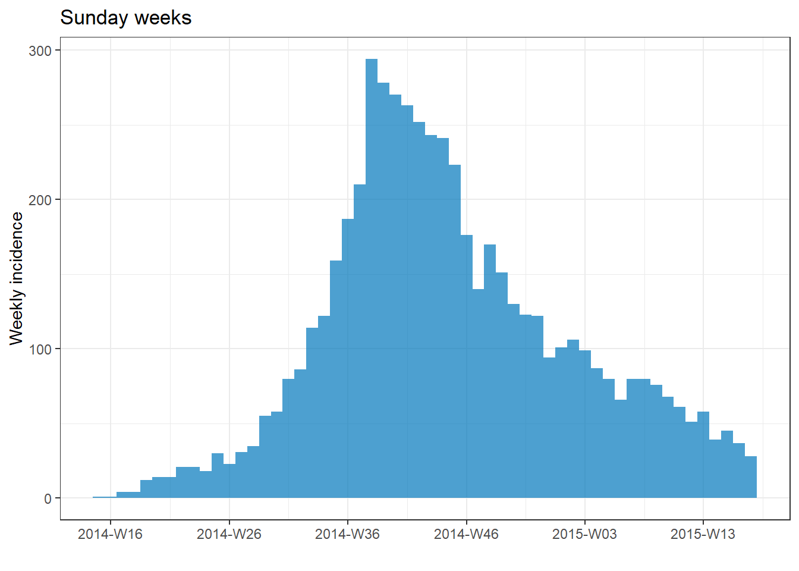 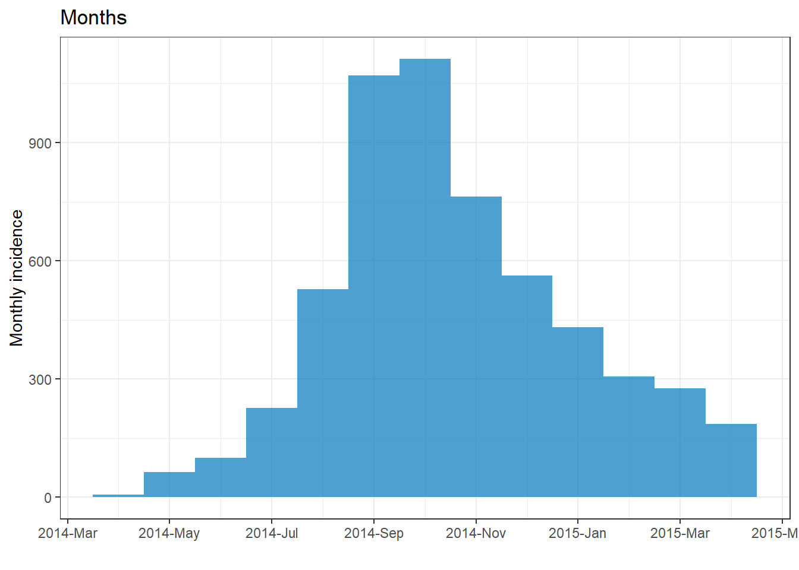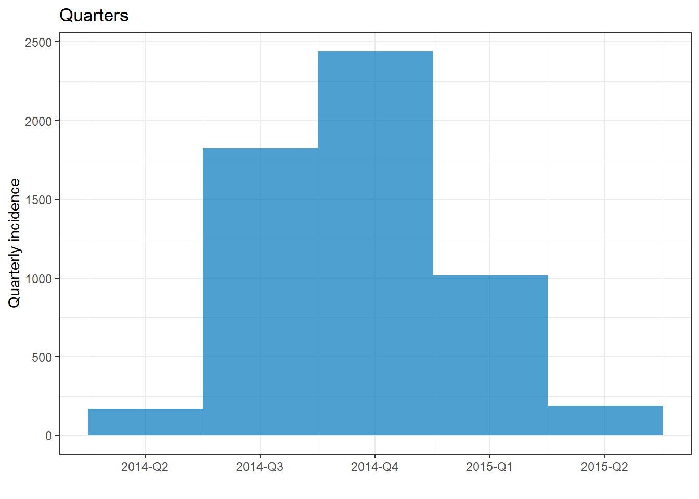
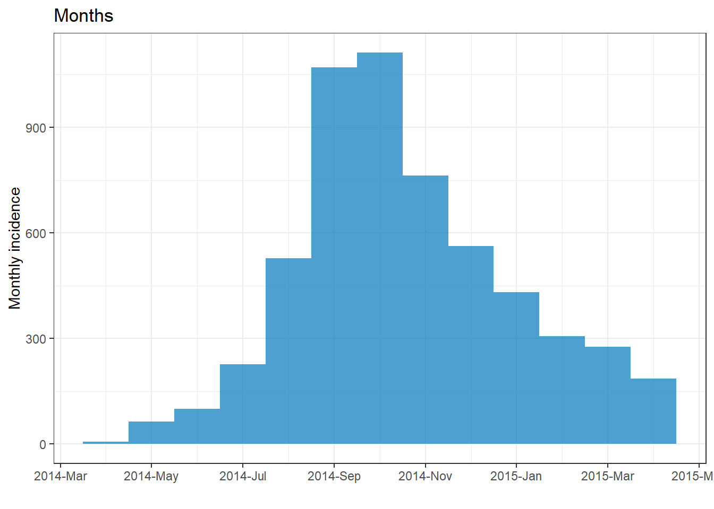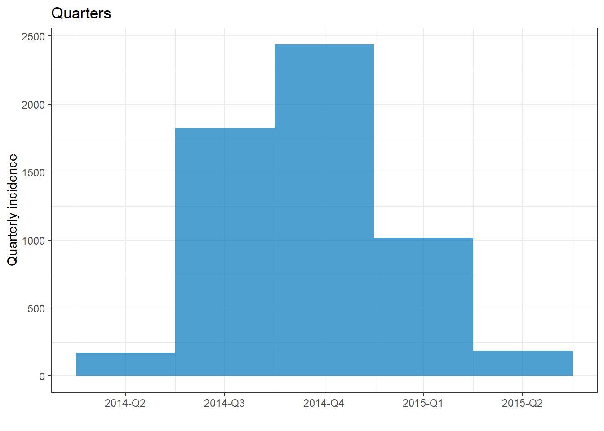
İlk tarih
İsteğe bağlı olarak, incidence() komutunda firstdate =olarak tarih sınıfının bir değerini (ör. as.Date("2016-05-01")) belirtebilirsiniz. Verilirse, veriler bu aralığa kırpılacak ve aralıklar bu tarihte başlayacaktır.
Gruplar
Gruplar incidence()komutunda belirtilir ve çubukları renklendirmek veya verileri yönlendirmek için kullanılabilir. Verilerinizdeki grupları belirtmek için, incidence() komutunda groups = bağımsız değişkenine sütun adlarını sağlayın (sütun adının çevresinde tırnak işareti yok). Birden fazla sütun belirtiyorsanız, adlarını c() içine koyun.
na_as_group = TRUE ayarını yaparak gruplandırma sütunlarında eksik değerleri olan durumların ayrı bir NA grubu olarak listelenmesini sağlayabilirsiniz. Aksi takdirde, grafikten hariç tutulurlar.
Çubukları bir gruplama sütununa göre renklendirmek için,
plot()komutunda, doldurmak/fill =için sütun adını tekrar temin etmeniz gerekir.Gruplandırma sütununu temel alan yönlendirmeler için, incidence2 ile ilgili görünümlerde aşağıdaki bölüme bakın.
Aşağıdaki örnekte, tüm salgındaki vakalar yaş kategorilerine göre gruplandırılmıştır. Eksik değerler grup olarak dahil edilir. Salgın eğrisi aralığı hafta olarak alınır.
# Create incidence object, with data grouped by age category
age_outbreak <- incidence(
linelist, # dataset
date_index = date_onset, # date column
interval = "week", # Monday weekly aggregation of cases
groups = age_cat, # age_cat is set as a group
na_as_group = TRUE) # missing values assigned their own group
# plot the grouped incidence object
plot(
age_outbreak, # incidence object with age_cat as group
fill = age_cat)+ # age_cat is used for bar fill color (must have been set as a groups column above)
labs(fill = "Age Category") # change legend title from default "age_cat" (this is a ggplot2 modification)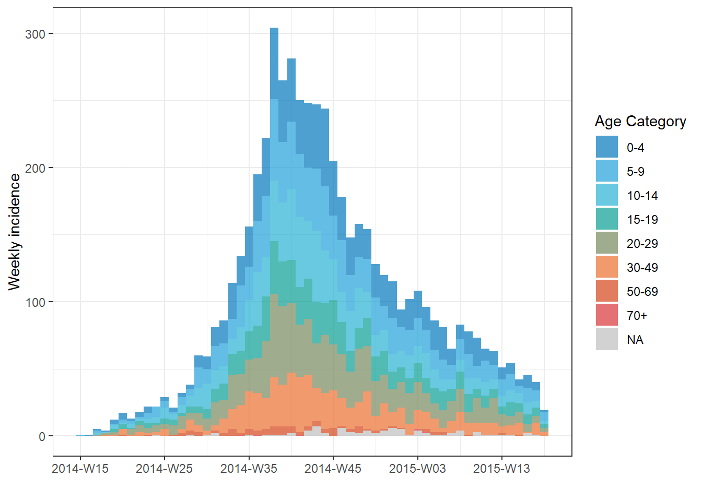İPUCU: Göstergenin başlığını, incidence2 grafiğinize + ggplot2 komut labs(fill = "your title") ekleyerek değiştirin.
Ayrıca, aşağıda gösterildiği gibi plot() içinde stack = FALSE ayarını yaparak gruplandırılmış çubukların yan yana görüntülenmesini sağlayabilirsiniz:
# Make incidence object of monthly counts.
monthly_gender <- incidence(
linelist,
date_index = date_onset,
interval = "month",
groups = gender # set gender as grouping column
)
plot(
monthly_gender, # incidence object
fill = gender, # display bars colored by gender
stack = FALSE) # side-by-side (not stacked)Eksik değerlere sahip satırları grafikten çıkarmak için na_as_group = bağımsız değişkenini incidence() komutunda FALSE olarak ayarlayabilirsiniz.
Filtrelenmiş veri
Bir veri alt kümesinin salgın eğrisini çizmek için:
- Satır listesi verilerini filtreleyin
-
incidence()komutuna filtrelenmiş verileri sağlayın
- İnsidans nesnesini grafiklendirin
Aşağıdaki örnek, yalnızca Central Hospital’daki vakaları göstermek için filtrelenmiş verileri kullanır.
# filter the linelist
central_data <- linelist %>%
filter(hospital == "Central Hospital")
# create incidence object using filtered data
central_outbreak <- incidence(central_data, date_index = date_onset, interval = "week")
# plot the incidence object
plot(central_outbreak, title = "Weekly case incidence at Central Hospital")Toplu sayımlar
Orijinal verileriniz toplanmışsa (sayımlar), incidence() ile insidans nesnesini oluştururken count = bağımsız değişkenine vaka sayılarını içeren sütunun adını girin.
Örneğin, bu veri çerçevesi count_data, hastane tarafından günlük sayımlarda toplanan satır listesidir. İlk 50 satır şöyle görünür:
ScriptIf Analizinize yukarıdaki veri kümesi gibi günlük sayım verileriyle başlıyorsanız, bunu hastaneye göre haftalık bir salgın eğrisi dönüştürmek için incidence() komutunuz şöyle görünür:
epi_counts <- incidence( # create weekly incidence object
count_data, # dataset with counts aggregated by day
date_index = date_hospitalisation, # column with dates
count = n_cases, # column with counts
interval = "week", # aggregate daily counts up to weeks
groups = hospital # group by hospital
)
# plot the weekly incidence epi curve, with stacked bars by hospital
plot(epi_counts, # incidence object
fill = hospital) # color the bars by hospitalYönlendirmeler/küçük katlar
Verileri gruba göre biçimlendirmek için (yani “küçük katlar” üretin):
- insidans nesnesini oluşturduğunuzda
groups =için yönlendirme sütununu belirtin,
-
plot()yerinefacet_plot()komutunu kullanın, - Hangi gruplandırma sütunlarının
fill =ve hangilerininfacets =olarak kullanılacağını belirtin.
Aşağıda, incidence() komutunda hem hospital hem de outcome sütunlarını gruplandırma sütunları olarak ayarladık. Daha sonra, facet_plot()içinde, her hastane için farklı bir salgın eğrisi istediğimizi ve her bir salgın eğrisi içindeki çubukların sonuca göre yığıp renklendirilmesi gerektiğini belirterek, salgın eğrisi çizeriz.
epi_wks_hosp_out <- incidence(
linelist, # dataset
date_index = date_onset, # date column
interval = "month", # monthly bars
groups = c(outcome, hospital) # both outcome and hospital are given as grouping columns
)
# plot
incidence2::facet_plot(
epi_wks_hosp_out, # incidence object
facets = hospital, # facet column
fill = outcome) # fill columnggtree paketinin (filogenetik ağaçları görüntülemek için kullanılır) ayrıca bir facet_plot()fonksiyonu sahip olduğuna dikkat edin - bu nedenle yukarıda incidence2::facet_plot() belirtilmiştir.
plot() ile yapılan değişiklikler
incidence2 tarafından üretilen bir salgın eğrisi, plot()fonksiyonu içindeki bu bağımsız değişkenler aracılığıyla değiştirilebilir.
Çubukların görünümünü değiştiren plot()bağımsız değişkenleri şunlardır:
| Bağımsız değişken | Açıklama | Örnekler |
|---|---|---|
fill = |
Çubuk rengi. groups = önceden belirtilen bir renk veya sütun adı incidence() komutunda |
fill = "red", ya da fill = gender
|
color = |
Her çubuğun etrafını veya bir çubuk içindeki her gruplamanın etrafını renklendirin | border = "white" |
legend = |
Göstergenin yeri | “Alt”, “üst”, “sol”, “sağ” veya “hiçbiri” seçeneklerinden biri |
alpha = |
Çubukların/bölmelerin şeffaflığı/1 tamamen opak, 0 tamamen şeffaf | |
width = |
Çubukların zaman aralığına göre göreceli boyutunu gösteren 0 ile 1 arasındaki değer | width = .7 |
show_cases = |
Mantıksal olarak; DOĞRU ise, her durum bir bölme olarak gösterilir. Daha küçük salgınlarda en iyi şekilde görüntülenir. | show_cases = TRUE |
Tarih eksenini değiştiren plot()bağımsız değişkenleri şunlardır:
| Bağımsız değişken(ler) | Açıklama |
|---|---|
centre_dates = |
Tarih göstergelerinin çubukların ortasında mı yoksa çubukların başında mı görüneceği konusunda DOĞRU/YANLIŞ. |
date_format = |
strptime (“%”) sözdizimini kullanarak tarih görüntüleme biçimini ayarlayın. Yalnızca centre_dates = FALSE ise çalışır (ayrıntılar aşağıdadır). |
n.breaks = |
İstenen yaklaşık x ekseni etiket sonu sayısı. |
angle = |
x ekseni tarih etiketlerinin açısı (derece sayısı). |
size = |
Nokta cinsinden metnin boyutu. |
date_breaks = bağımsız değişkenlerinin yalnızca centre_dates = FALSE olduğunda çalıştığını unutmayın. [Tarihlerle çalışma sayfasında] ayrıntılı olarak açıklandığı gibi, aşağıdaki strptime sözdizimini kullanarak tırnak içinde bir karakter değeri girin. “yeni satır” için \n kullanabilirsiniz.
%d = Ayın gün sayısı (5, 17, 28, v.b.) %j = Yılın gün sayısı (Julian günü 001-366) %a = Kısaltılmış hafta içi (Pzt, Slı, Çrşb, v.b.) %A = Tam hafta içi (Pazartesi, Salı, v.b.) %w = Hafta içi numarası (0-6, Pazar için 0) %u = Hafta içi numarası (1-7, Pazartesi için 1) %W = Hafta numarası (00-53, Pazartesi hafta başlangıcıdır) %U = Hafta numarası (01-53, Pazar hafta başlangıcıdır) %m = Hafta numarası (Örneğin 01, 02, 03, 04) %b = Kısaltılmış ay (Ock, Şbt, v.b.) %B = Tam ay (Ocak, Şubat, v.b.) %y = 2 basamaklı yıl (örneğin 89) %Y = 4 basamaklı yıl (örneğin 1989) %h = saatler (24 saatlik saat) %m = dakikalar %s = saniyeler %z = GMT’den karşılığı %Z = Saat dilimi (karakter)
Grafik etiketlerini değiştiren plot()argümanları şunlardır:
| Argüman(lar) | Açıklama |
|---|---|
title = |
Grafik başlığı |
xlab = |
x ekseninin başlığı |
ylab = |
y ekseninin başlığı |
size = |
Nokta cinsinden x ekseni metninin boyutu (diğer boyutları ayarlamak için ggplot’un temasını () kullanın) |
Yukarıdaki argümanların çoğunu kullanan bir örnek:
# filter the linelist
central_data <- linelist %>%
filter(hospital == "Central Hospital")
# create incidence object using filtered data
central_outbreak <- incidence(
central_data,
date_index = date_onset,
interval = "week",
groups = outcome)
# plot incidence object
plot(
central_outbreak,
fill = outcome, # box/bar color
legend = "top", # legend on top
title = "Cases at Central Hospital", # title
xlab = "Week of onset", # x-axis label
ylab = "Week of onset", # y-axis label
show_cases = TRUE, # show each case as an individual box
alpha = 0.7, # transparency
border = "grey", # box border
angle = 30, # angle of date labels
centre_dates = FALSE, # date labels at edge of bar
date_format = "%a %d %b %Y\n(Week %W)" # adjust how dates are displayed
)Grafiğin görünümünü daha fazla ayarlamak için, ggplot() ile yapılan değişikliklerle ilgili aşağıdaki bölüme bakın.
ggplot2 ile değişiklikler
Aşağıda gösterildiği gibi, insidans plot()fonksiyonunun kapanışından sonra + ile ggplot2 değişiklikleri ekleyerek bir insidans2 grafiğini daha fazla değiştirebilirsiniz.
Aşağıda, incidence2 grafiklendirme sona erer ve ardından eksenleri değiştirmek, başlık eklemek ve kalın yazı tipini ve metin boyutunu ayarlamak için ggplot2 komutları kullanılır.
scale_x_date()öğesini eklerseniz, plot()öğesindeki çoğu tarih biçimlendirmesinin üzerine yazılacağını unutmayın. Daha fazla seçenek için ggplot()salgın eğrisi bölümüne ve El Kitabı sayfası ggplot ipuçlarına bakın.
# filter the linelist
central_data <- linelist %>%
filter(hospital == "Central Hospital")
# create incidence object using filtered data
central_outbreak <- incidence(
central_data,
date_index = date_onset,
interval = "week",
groups = c(outcome))
# plot incidence object
plot(
central_outbreak,
fill = outcome, # box/bar color
legend = "top", # legend on top
title = "Cases at Central Hospital", # title
xlab = "Week of onset", # x-axis label
ylab = "Week of onset", # y-axis label
show_cases = TRUE, # show each case as an individual box
alpha = 0.7, # transparency
border = "grey", # box border
centre_dates = FALSE,
date_format = "%a %d %b\n%Y (Week %W)",
angle = 30 # angle of date labels
)+
scale_y_continuous(
breaks = seq(from = 0, to = 30, by = 5), # specify y-axis increments by 5
expand = c(0,0))+ # remove excess space below 0 on y-axis
# add dynamic caption
labs(
fill = "Patient outcome", # Legend title
caption = stringr::str_glue( # dynamic caption - see page on characters and strings for details
"n = {central_cases} from Central Hospital
Case onsets range from {earliest_date} to {latest_date}. {missing_onset} cases are missing date of onset and not shown",
central_cases = nrow(central_data),
earliest_date = format(min(central_data$date_onset, na.rm=T), format = '%a %d %b %Y'),
latest_date = format(max(central_data$date_onset, na.rm=T), format = '%a %d %b %Y'),
missing_onset = nrow(central_data %>% filter(is.na(date_onset)))))+
# adjust bold face, and caption position
theme(
axis.title = element_text(size = 12, face = "bold"), # axis titles larger and bold
axis.text = element_text(size = 10, face = "bold"), # axis text size and bold
plot.caption = element_text(hjust = 0, face = "italic") # move caption to left
)
Renkleri değiştirmek
Bir palet belirtin
plot()içindeki col_pal = argümanına önceden tanımlanmış bir paletin adını sağlayın. incidence2 paketi, önceden tanımlanmış 2 paletle gelir: “canlı” ve “sessiz”. “Canlı”da ilk 6 renk belirgin ve “sessiz”de ilk 9 renk farklıdır. Bu sayılardan sonra renkler, diğer renklerin interpolasyonları/aracılarıdır. Bu önceden tanımlanmış paletler bu web sitesinde bulunabilir. Paletler, eksik veriler için ayrılan gri rengi hariç tutar (bu varsayılanı değiştirmek için na_color = kullanın).
# Create incidence object, with data grouped by age category
age_outbreak <- incidence(
linelist,
date_index = date_onset, # date of onset for x-axis
interval = "week", # weekly aggregation of cases
groups = age_cat)
# plot the epicurve with default palette
plot(age_outbreak, fill = age_cat, title = "'vibrant' default incidence2 palette")
# plot with different color palette
#plot(age_outbreak, fill = age_cat, col_pal = muted, title = "'muted' incidence2 palette")
Ayrıca R tabanı paletlerinden birini de kullanabilirsiniz (palet adını tırnak işaretleri olmadan yazın).
# plot with base R palette
plot(age_outbreak, fill = age_cat, col_pal = heat.colors, title = "base R heat.colors palette")
# plot with base R palette
plot(age_outbreak, fill = age_cat, col_pal = rainbow, title = "base R rainbow palette")

Ayrıca viridis paketinden veya RColorBrewer paketinden bir renk paleti ekleyebilirsiniz. Önce bu paketler yüklenmelidir, ardından aşağıda gösterildiği gibi ilgili scale_fill_*() fonksiyonlarını bir + ile ekleyin.
pacman::p_load(RColorBrewer, viridis)
# plot with color palette
plot(age_outbreak, fill = age_cat, title = "Viridis palette")+
scale_fill_viridis_d(
option = "inferno", # color scheme, try also "plasma" or the default
name = "Age Category", # legend name
na.value = "grey") # for missing values
# plot with color palette
plot(age_outbreak, fill = age_cat, title = "RColorBrewer palette")+
scale_fill_brewer(
palette = "Dark2", # color palette, try also Accent, Dark2, Paired, Pastel1, Pastel2, Set1, Set2, Set3
name = "Age Category", # legend name
na.value = "grey") # for missing values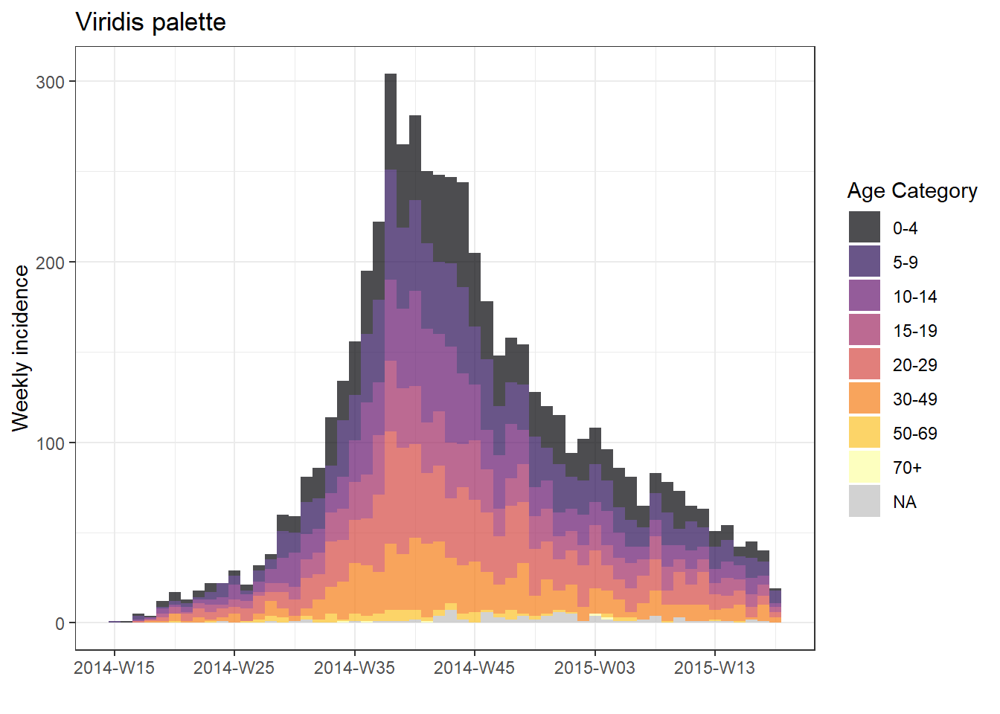
Manuel olarak belirtin
Renkleri manuel olarak belirtmek için, ggplot2 işlevini scale_fill_manual()ile plot()öğesine bir + ekleyin ve renk adlarının vektörünü veya HEX kodlarını bağımsız değişken values = sağlayın. Listelenen renk sayısı, grup sayısına eşit olmalıdır. Eksik değerlerin bir grup olup olmadığına dikkat edin - Faktörler sayfasında açıklandığı gibi fct_explicit_na()işleviyle veri hazırlamanız sırasında “Missing” gibi bir karakter değerine dönüştürülebilirler.
# manual colors
plot(age_outbreak, fill = age_cat, title = "Manually-specified colors")+
scale_fill_manual(
values = c("darkgreen", "darkblue", "purple", "grey", "yellow", "orange", "red", "lightblue"), # colors
name = "Age Category") # Name for legendGgplot ipuçları sayfasında belirtildiği gibi, bir renk vektörü üzerinde colorRampPalette() kullanarak ve karşılığında istediğiniz renk sayısını belirterek kendi paletlerinizi oluşturabilirsiniz. Bu, birkaçını belirterek bir rampada birçok rengi elde etmenin iyi bir yoludur.
my_cols <- c("darkgreen", "darkblue", "purple", "grey", "yellow", "orange")
my_palette <- colorRampPalette(my_cols)(12) # expand the 6 colors above to 12 colors
my_palette## [1] "#006400" "#00363F" "#00097E" "#3A0BAF" "#821ADD" "#A84BE2" "#B592CB" "#C9C99B" "#E7E745" "#FFF600" "#FFCD00"
## [12] "#FFA500"Seviye sırasını ayarla
Grup görünüm sırasını ayarlamak için (grafikte ve göstergede), gruplandırma sütunu sınıf Faktörü olmalıdır. Daha fazla bilgi için Faktörler sayfasına bakın.
İlk olarak, varsayılan sıralamayla hastaneye göre haftalık bir salgın eğrisini görelim:
# ORIGINAL - hospital NOT as factor
###################################
# create weekly incidence object, rows grouped by hospital and week
hospital_outbreak <- incidence(
linelist,
date_index = date_onset,
interval = "week",
groups = hospital)
# plot incidence object
plot(hospital_outbreak, fill = hospital, title = "ORIGINAL - hospital not a factor")
Şimdi sırayı “Eksik” ve “Diğer” salgın eğrisinin en üstünde olacak şekilde ayarlamak için aşağıdakileri yapabiliriz:
- Faktörlerle çalışmak için forcats paketini yükleyin.
- Veri kümesini ayarlayın - bu durumda aşağıdakileri içeren yeni bir veri kümesi (
plot_data) tanımlayacağız:-
gendersütunu bir faktör olarak tanımlanır, seviyelerin sırasıfct_relevel()ile ayarlanır, böylece “Diğer” ve “Eksik” ilk olur, böylece çubukların en üstünde görünürler.
-
- İnsidans nesnesi daha önce olduğu gibi oluşturulur ve grafiklendirilir
-
ggplot2 değişiklikleri ekliyoruz;
- “Eksik” gri ve “Diğer” bej olacak şekilde renkleri manuel olarak atamak için
scale_fill_manual()
- “Eksik” gri ve “Diğer” bej olacak şekilde renkleri manuel olarak atamak için
# MODIFIED - hospital as factor
###############################
# load forcats package for working with factors
pacman::p_load(forcats)
# Convert hospital column to factor and adjust levels
plot_data <- linelist %>%
mutate(hospital = fct_relevel(hospital, c("Missing", "Other"))) # Set "Missing" and "Other" as top levels
# Create weekly incidence object, grouped by hospital and week
hospital_outbreak_mod <- incidence(
plot_data,
date_index = date_onset,
interval = "week",
groups = hospital)
# plot incidence object
plot(hospital_outbreak_mod, fill = hospital)+
# manual specify colors
scale_fill_manual(values = c("grey", "beige", "darkgreen", "green2", "orange", "red", "pink"))+
# labels added via ggplot
labs(
title = "MODIFIED - hospital as factor", # plot title
subtitle = "Other & Missing at top of epicurve",
y = "Weekly case incidence", # y axis title
x = "Week of symptom onset", # x axis title
fill = "Hospital") # title of legend İPUCU: Yalnızca göstergenin sırasını tersine çevirmek istiyorsanız, bu ggplot2 komut kılavuzlarını ekleyin guides(fill = guide_legend(reverse = TRUE)).
Dikey klavuz çizgileri
Varsayılan incidence2 ayarlarıyla çizerseniz, dikey kılavuz çizgilerinin her tarih etiketinde ve her tarih etiketi arasında bir kez göründüğünü fark edebilirsiniz. Bu, ızgara çizgilerinin bazı çubukların üst kısmıyla kesişmesine neden olabilir.
ggplot2 komutunu theme_classic()ekleyerek tüm kılavuz çizgilerini kaldırabilirsiniz.
# make incidence object
a <- incidence(
central_data,
date_index = date_onset,
interval = "Monday weeks"
)
# Default gridlines
plot(a, title = "Default lines")
# Specified gridline intervals
# NOT WORKING WITH INCIDENCE2 1.0.0
# plot(a, title = "Weekly lines")+
# scale_x_date(
# date_breaks = "4 weeks", # major vertical lines align on weeks
# date_minor_breaks = "weeks", # minor vertical lines every week
# date_labels = "%a\n%d\n%b") # format of date labels
# No gridlines
plot(a, title = "No lines")+
theme_classic() # remove all gridlines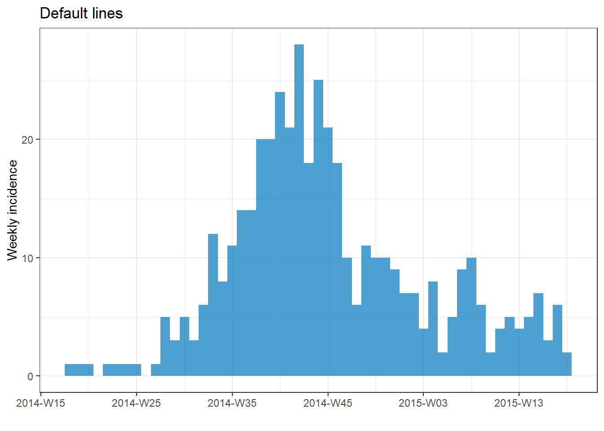
Bununla birlikte, haftalar kullanılıyorsa, date_breaks ve date_minor_breaks argümanlarının yalnızca Pazartesi haftaları için çalıştığını unutmayın. Haftalarınız haftanın başka bir günüyse, bunun yerine breaks = ve minor_breaks = argümanlarına manuel olarak bir tarih vektörü sağlamanız gerekir. seq.Date()kullanarak bunun örnekleri için ggplot2 bölümüne bakın.
Kümülatif insidans
İnsidans nesnesini incidence2 cumulate() komutuna ve ardından plot() komutuna ileterek, kümülatif insidansın bir grafiğini kolaylıkla üretebilirsiniz. Bu aynı zamanda facet_plot() ile de çalışır.
# make weekly incidence object
wkly_inci <- incidence(
linelist,
date_index = date_onset,
interval = "week"
)
# plot cumulative incidence
wkly_inci %>%
cumulate() %>%
plot()
ggplot2 ile kümülatif insidansı çizmek için alternatif yöntem için bu sayfanın ilerisindeki bölüme bakın - örneğin, bir salgın eğrisi üzerine kümülatif bir insidans çizgisini bindirmek gibi.
Ortalama yuvarlama
i2extras paketindeki add_rolling_average()ile kolayca bir incidence2 grafiğine hareketli bir ortalama ekleyebilirsiniz. İnsidans2 nesnenizi bu işleve ve ardından plot() öğesine iletin. before = olarak ayarlayın, dönen ortalamaya dahil edilmesini istediğiniz önceki günlerin sayısı (varsayılan 2’dir). Verileriniz gruplandırılmışsa, hareketli ortalama grup başına hesaplanacaktır.
rolling_avg <- incidence( # make incidence object
linelist,
date_index = date_onset,
interval = "week",
groups = gender) %>%
i2extras::add_rolling_average(before = 6) # add rolling averages (in this case, by gender)
# plot
plot(rolling_avg) # faceted automatically because rolling average on groups
Verilere daha genel olarak yuvarlanan ortalamaların nasıl uygulanacağını öğrenmek için Hareketli ortalamalar hakkındaki El Kitabı sayfasına bakın.
32.3 ggplot2 ile salgın eğrileri
Salgın eğrinizi oluşturmak için ggplot()’u kullanmak daha fazla esneklik ve özelleştirme sağlar, ancak ggplot()’un nasıl çalıştığına dair daha fazla çaba ve anlayış gerektirir.
incidence2 paketini kullanmaktan farklı olarak, vakaların zamana (haftalara, aylara vb.) göre toplanmasını ve tarih eksenindeki etiketlerin sonlanmalarını manuel olarak kontrol etmelisiniz. Bu dikkatle yönetilmelidir.
Bu örnekler, linelist veri kümesinin bir alt kümesini kullanır - yalnızca Central Hospital’daki vakalar.
ggplot() ile bir salgın eğrisi oluşturmak için üç ana unsur vardır:
- Belirli “sonlanlanma” noktalarıyla ayırt edilen “bölmelere” toplanmış satır listesi vakaları içeren bir histogram,
- Eksenler ve etiketleri için ölçekler,
- Başlıklar, etiketler, altyazılar vb. dahil olmak üzere grafik görünümü için temalar.
Vaka bölmelerini belirtin
Burada, vakaların histogram bölmelerinde (“çubuklar”) nasıl toplanacağını belirteceğiz. Vakaların histogram bölmelerinde toplanmasının, x ekseninde görünecek tarihlerle mutlaka aynı sonlanmalar olmadığını bilmek önemlidir.
Aşağıda, günlük ve haftalık salgın eğrileri üretmek için belki de en basit kod verilmiştir.
Aşırı kemerli ggplot() komutunda, veri kümesi data = olarak sağlanır. Bu temel üzerine, bir histogramın geometrisi + ile eklenir. geom_histogram() içinde, date_onset sütunu x eksenine eşlenecek şekilde estetiği eşleriz. Ayrıca geom_histogram() içinde ama aes() içinde değil, histogram bölmelerinin binwidth = değerini gün olarak ayarladık. Bu ggplot2 sözdizimi kafa karıştırıcıysa, ggplot temelleri hakkındaki sayfayı inceleyin.
DİKKAT: binwidth = 7 kullanarak haftalık vakaları grafiklendirmek, ilk durumda ilk 7 günlük bölmeyi başlatır, bu haftanın herhangi bir günü olabilir! Belirli haftalar oluşturmak için aşağıdaki bölüme bakın.
# daily
ggplot(data = central_data) + # set data
geom_histogram( # add histogram
mapping = aes(x = date_onset), # map date column to x-axis
binwidth = 1)+ # cases binned by 1 day
labs(title = "Central Hospital - Daily") # title
# weekly
ggplot(data = central_data) + # set data
geom_histogram( # add histogram
mapping = aes(x = date_onset), # map date column to x-axis
binwidth = 7)+ # cases binned every 7 days, starting from first case (!)
labs(title = "Central Hospital - 7-day bins, starting at first case") # title

Bu Central Hopital veri setindeki ilk vakanın aşağıdakilerde semptom başlangıcı olduğunu not edelim:
## [1] "Thursday 01 May, 2014"Histogram bölme kesmelerini manuel olarak belirtmek için bölme binwidth = argümanını kullanmayın ve bunun yerine breaks = için bir tarih vektörü sağlayın.
R tabanı işlevi seq.Date()ile tarihlerin vektörünü oluşturun. Bu fonksiyon to =, from = ve by = argümanlarını bekler. Örneğin, aşağıdaki komut, 15 Ocak’ta başlayan ve 28 Haziran’a kadar biten aylık tarihleri döndürür.
monthly_breaks <- seq.Date(from = as.Date("2014-02-01"),
to = as.Date("2015-07-15"),
by = "months")
monthly_breaks # print## [1] "2014-02-01" "2014-03-01" "2014-04-01" "2014-05-01" "2014-06-01" "2014-07-01" "2014-08-01" "2014-09-01"
## [9] "2014-10-01" "2014-11-01" "2014-12-01" "2015-01-01" "2015-02-01" "2015-03-01" "2015-04-01" "2015-05-01"
## [17] "2015-06-01" "2015-07-01"Bu vektör geom_histogram()’a breaks = olarak sağlanabilir:
# monthly
ggplot(data = central_data) +
geom_histogram(
mapping = aes(x = date_onset),
breaks = monthly_breaks)+ # provide the pre-defined vector of breaks
labs(title = "Monthly case bins") # title
Basit bir haftalık tarih dizisi, by = "week" ile ayarlanarak döndürülebilir. Örneğin:
Belirli başlangıç ve bitiş tarihlerini sağlamaya bir alternatif, haftalık bölmelerin ilk durumdan önceki Pazartesi günü başlaması için dinamik kod yazmaktır. Aşağıdaki örneklerde bu tarih vektörlerini kullanacağız.
# Sequence of weekly Monday dates for CENTRAL HOSPITAL
weekly_breaks_central <- seq.Date(
from = floor_date(min(central_data$date_onset, na.rm=T), "week", week_start = 1), # monday before first case
to = ceiling_date(max(central_data$date_onset, na.rm=T), "week", week_start = 1), # monday after last case
by = "week")Yukarıdaki oldukça göz korkutucu kodu açalım:
- “from” değeri (dizinin en erken tarihi) şu şekilde oluşturulur:
date_onsetsütunundaki minimum tarih değeri (min()ilena.rm=TRUE) lubridate paketindenfloor_date()öğesine beslenir.floor_date()“hafta” olarak ayarlandığında, her haftanın başlangıç gününün Pazartesi olması koşuluyla (week_start = 1) bu vakaların “hafta”sının başlangıç tarihini döndürür.
- Benzer şekilde, “to” değeri (dizinin bitiş tarihi), son vakadan sonraki Pazartesi gününü döndürmek için
ceiling_date()ters işlevi kullanılarak oluşturulur.
-
seq.Date()öğesinin “by” argümanı herhangi bir sayıda gün, hafta veya aya ayarlanabilir.
- Pazar haftaları için
week_start = 7kullanın.
Bu sayfa boyunca bu veri vektörlerini kullanacağımız için, tüm salgın için bir tane de tanımladık (yukarıdakiler sadece Central Hospital içindir).
# Sequence for the entire outbreak
weekly_breaks_all <- seq.Date(
from = floor_date(min(linelist$date_onset, na.rm=T), "week", week_start = 1), # monday before first case
to = ceiling_date(max(linelist$date_onset, na.rm=T), "week", week_start = 1), # monday after last case
by = "week")Bu seq.Date()çıktıları, histogram bölme sonlanmalarını oluşturmak için kullanılabilir, ancak aynı zamanda bölmelerden bağımsız olabilen tarih etiketleri için sonlanmalar da kullanılabilir. Sonraki bölümlerde tarih etiketleri hakkında daha fazla bilgi edinin.
İPUCU: Daha basit bir ggplot() komutu için, bölme sonlanmalarını ve etiket sonlanmalarını önceden adlandırılmış vektörler olarak kaydedin ve yalnızca adlarını breaks = olarak değiştirin.
Haftalık salgın eğrisi örneği
Aşağıda, hizalanmış çubuklar, tarih etiketleri ve dikey kılavuz çizgileri ile Pazartesi haftaları için haftalık salıgın eğrileri oluşturmak için ayrıntılı örnek kod verilmiştir. Bu bölüm, hızlı bir şekilde koda ihtiyaç duyan kullanıcı içindir. Her yönü (temalar, tarih etiketleri vb.) derinlemesine anlamak için sonraki bölümlere geçin. Önemli:
-
Histogram bölme araları, en erken vakadan önceki Pazartesi günü başlayacak ve son vakadan sonraki Pazartesi günü sona erecek şekilde yukarıda açıklandığı gibi
seq.Date()ile tanımlanır.
-
Tarih etiketlerinin aralığı,
scale_x_date()içindedate_breaks =ile belirtilir.
- Tarih etiketleri arasındaki küçük dikey kılavuz çizgilerinin aralığı,
date_minor_breaks =olarak belirtilir. - x ve y ölçeklerinde
expand = c(0,0)eksenlerin her iki yanındaki fazla boşluğu kaldırır, bu da tarih etiketlerinin ilk çubuktan başlamasını sağlar.
# TOTAL MONDAY WEEK ALIGNMENT
#############################
# Define sequence of weekly breaks
weekly_breaks_central <- seq.Date(
from = floor_date(min(central_data$date_onset, na.rm=T), "week", week_start = 1), # Monday before first case
to = ceiling_date(max(central_data$date_onset, na.rm=T), "week", week_start = 1), # Monday after last case
by = "week") # bins are 7-days
ggplot(data = central_data) +
# make histogram: specify bin break points: starts the Monday before first case, end Monday after last case
geom_histogram(
# mapping aesthetics
mapping = aes(x = date_onset), # date column mapped to x-axis
# histogram bin breaks
breaks = weekly_breaks_central, # histogram bin breaks defined previously
# bars
color = "darkblue", # color of lines around bars
fill = "lightblue" # color of fill within bars
)+
# x-axis labels
scale_x_date(
expand = c(0,0), # remove excess x-axis space before and after case bars
date_breaks = "4 weeks", # date labels and major vertical gridlines appear every 3 Monday weeks
date_minor_breaks = "week", # minor vertical lines appear every Monday week
date_labels = "%a\n%d %b\n%Y")+ # date labels format
# y-axis
scale_y_continuous(
expand = c(0,0))+ # remove excess y-axis space below 0 (align histogram flush with x-axis)
# aesthetic themes
theme_minimal()+ # simplify plot background
theme(
plot.caption = element_text(hjust = 0, # caption on left side
face = "italic"), # caption in italics
axis.title = element_text(face = "bold"))+ # axis titles in bold
# labels including dynamic caption
labs(
title = "Weekly incidence of cases (Monday weeks)",
subtitle = "Note alignment of bars, vertical gridlines, and axis labels on Monday weeks",
x = "Week of symptom onset",
y = "Weekly incident cases reported",
caption = stringr::str_glue("n = {nrow(central_data)} from Central Hospital; Case onsets range from {format(min(central_data$date_onset, na.rm=T), format = '%a %d %b %Y')} to {format(max(central_data$date_onset, na.rm=T), format = '%a %d %b %Y')}\n{nrow(central_data %>% filter(is.na(date_onset)))} cases missing date of onset and not shown"))
Pazar haftaları
Pazar haftaları için yukarıdaki grafiği elde etmek için birkaç değişiklik gereklidir, çünkü date_breaks = "weeks" sadece Pazartesi haftaları için çalışır.
-
Histogram bölmelerinin sonlanma noktaları Pazar günleri olarak ayarlanmalıdır (
week_start = 7). -
scale_x_date()içinde, tarih etiketlerinin ve dikey kılavuz çizgilerinin Pazar günleri hizalanmasını sağlamak içinbreaks =veminor_breaks =için benzer tarih sonlanmaları sağlanmalıdır.
Örneğin, Pazar haftaları için scale_x_date() komutu şöyle görünebilir:
scale_x_date(
expand = c(0,0),
# specify interval of date labels and major vertical gridlines
breaks = seq.Date(
from = floor_date(min(central_data$date_onset, na.rm=T), "week", week_start = 7), # Sunday before first case
to = ceiling_date(max(central_data$date_onset, na.rm=T), "week", week_start = 7), # Sunday after last case
by = "4 weeks"),
# specify interval of minor vertical gridline
minor_breaks = seq.Date(
from = floor_date(min(central_data$date_onset, na.rm=T), "week", week_start = 7), # Sunday before first case
to = ceiling_date(max(central_data$date_onset, na.rm=T), "week", week_start = 7), # Sunday after last case
by = "week"),
# date label format
date_labels = "%a\n%d %b\n%Y")+ # day, above month abbrev., above 2-digit yearDeğere göre grup/renk
Histogram çubukları, grup ve “yığılmış” olarak renklendirilebilir. Gruplandırma sütununu atamak için aşağıdaki değişiklikleri yapın. Ayrıntılar için ggplot temelleri sayfasına bakın.
- Histogram estetik haritalama
aes()içinde, sütun adınıgroup =vefill =bağımsız değişkenini eşleştirin. -
aes()dışındaki herhangi birfill =argümanını kaldırın, çünkü içindekini geçersiz kılar.
-
aes()içindeki argümanlar gruba göre uygulanırken, dışındaki herhangi bir argüman tüm çubuklara uygulanacaktır (örneğin, yine decolor =dışarıda isteyebilirsiniz, böylece her çubuk aynı kenarlığa sahip olur).
Çubukları cinsiyete göre gruplamak ve renklendirmek için aes()komutu şöyle görünür:
aes(x = date_onset, group = gender, fill = gender)Burada uygulanır:
ggplot(data = linelist) + # begin with linelist (many hospitals)
# make histogram: specify bin break points: starts the Monday before first case, end Monday after last case
geom_histogram(
mapping = aes(
x = date_onset,
group = hospital, # set data to be grouped by hospital
fill = hospital), # bar fill (inside color) by hospital
# bin breaks are Monday weeks
breaks = weekly_breaks_all, # sequence of weekly Monday bin breaks for whole outbreak, defined in previous code
# Color around bars
color = "black")
Renkleri ayarlamak
- Her grup için dolguyu manuel olarak ayarlamak için
scale_fill_manual()öğesini kullanın (not:scale_color_manual()farklıdır!).- Bir renk vektörü uygulamak için
values =argümanını kullanın.
-
NAdeğerleri için bir renk belirtmek içinna.value =kullanın.
- Gösterge öğelerinin metnini değiştirmek için
labels =argümanını kullanın. Güvende olmak için,c("old" = "new", "old" = "new")gibi adlandırılmış bir vektör sağlayın veya verilerin kendisindeki değerleri ayarlayın.
- Açıklamaya uygun bir başlık koymak için
name =kullanın.
- Bir renk vektörü uygulamak için
- Renk ölçekleri ve paletler hakkında daha fazla ipucu için ggplot temelleri sayfasına bakın.
ggplot(data = linelist)+ # begin with linelist (many hospitals)
# make histogram
geom_histogram(
mapping = aes(x = date_onset,
group = hospital, # cases grouped by hospital
fill = hospital), # bar fill by hospital
# bin breaks
breaks = weekly_breaks_all, # sequence of weekly Monday bin breaks, defined in previous code
# Color around bars
color = "black")+ # border color of each bar
# manual specification of colors
scale_fill_manual(
values = c("black", "orange", "grey", "beige", "blue", "brown"),
labels = c("St. Mark's Maternity Hospital (SMMH)" = "St. Mark's"),
name = "Hospital") # specify fill colors ("values") - attention to order!Seviye sırasını ayarlamak
Gruplandırılmış çubukların istiflendiği sıra, en iyi şekilde gruplandırma sütununu sınıf Faktörü olarak sınıflandırarak ayarlanır. Daha sonra faktör düzeyi sırasını (ve bunların görüntü etiketlerini) belirleyebilirsiniz. Ayrıntılar için Faktörler veya ggplot ipuçları sayfasına bakın.
Grafiği yapmadan önce, gruplandırma sütununu sınıf faktörüne dönüştürmek için forcats paketindeki fct_relevel() işlevini kullanın ve Faktörler sayfasında ayrıntılı olarak açıklandığı gibi seviye sırasını manuel olarak ayarlayın.
# load forcats package for working with factors
pacman::p_load(forcats)
# Define new dataset with hospital as factor
plot_data <- linelist %>%
mutate(hospital = fct_relevel(hospital, c("Missing", "Other"))) # Convert to factor and set "Missing" and "Other" as top levels to appear on epicurve top
levels(plot_data$hospital) # print levels in order## [1] "Missing" "Other"
## [3] "Central Hospital" "Military Hospital"
## [5] "Port Hospital" "St. Mark's Maternity Hospital (SMMH)"Aşağıdaki çizimde, öncekinden tek fark, hospital sütununu yukarıdaki gibi konsolide edilmiş olmasıdır ve gösterge sırasını tersine çevirmek için guides()kullanıyoruz, böylece “Eksik” göstergenin alt kısmındadır.
ggplot(plot_data) + # Use NEW dataset with hospital as re-ordered factor
# make histogram
geom_histogram(
mapping = aes(x = date_onset,
group = hospital, # cases grouped by hospital
fill = hospital), # bar fill (color) by hospital
breaks = weekly_breaks_all, # sequence of weekly Monday bin breaks for whole outbreak, defined at top of ggplot section
color = "black")+ # border color around each bar
# x-axis labels
scale_x_date(
expand = c(0,0), # remove excess x-axis space before and after case bars
date_breaks = "3 weeks", # labels appear every 3 Monday weeks
date_minor_breaks = "week", # vertical lines appear every Monday week
date_labels = "%d\n%b\n'%y")+ # date labels format
# y-axis
scale_y_continuous(
expand = c(0,0))+ # remove excess y-axis space below 0
# manual specification of colors, ! attention to order
scale_fill_manual(
values = c("grey", "beige", "black", "orange", "blue", "brown"),
labels = c("St. Mark's Maternity Hospital (SMMH)" = "St. Mark's"),
name = "Hospital")+
# aesthetic themes
theme_minimal()+ # simplify plot background
theme(
plot.caption = element_text(face = "italic", # caption on left side in italics
hjust = 0),
axis.title = element_text(face = "bold"))+ # axis titles in bold
# labels
labs(
title = "Weekly incidence of cases by hospital",
subtitle = "Hospital as re-ordered factor",
x = "Week of symptom onset",
y = "Weekly cases")İPUCU: Yalnızca göstergenin sırasını tersine çevirmek için bu ggplot2 komutunu ekleyin: guides(fill = guide_legend(reverse = TRUE)).
Göstergeyi ayarlamak
ggplot ipuçları sayfasında göstergeler ve ölçekler hakkında daha fazla bilgi edinin. İşte birkaç önemli nokta:
- Gösterge başlığını ölçek işlevinde veya
labs(fill = "Legend title")ile düzenleyin (color =estetik kullanıyorsanız,labs(color = "")kullanın)
- Gösterge başlığının olmaması için
theme(legend.title = element_blank())kulanın.
-
theme(legend.position = "top")(göstergeyi kaldırmak için “alt”, “sol”, “sağ” veya “yok”) kullanın. - Yatay gösterge için
theme(legend.direction = "horizontal")kullanın. - Göstergenin sırasını tersine çevirmek için
guides(fill = guide_legend(reverse = TRUE))kullanın.
Yan yana çubuklar
Grup çubuklarının yan yana gösterimi (yığılmışın aksine) geom_histogram()içinde, position = "dodge" aes() dışına yerleştirilerek belirtilir.
İkiden fazla değer grubu varsa, bunların okunması zorlaşabilir. Bunun yerine fasetli bir grafik (küçük katlar) kullanmayı düşünün. Bu örnekte okunabilirliği artırmak için eksik cinsiyet değerleri kaldırılmıştır.
ggplot(central_data %>% drop_na(gender))+ # begin with Central Hospital cases dropping missing gender
geom_histogram(
mapping = aes(
x = date_onset,
group = gender, # cases grouped by gender
fill = gender), # bars filled by gender
# histogram bin breaks
breaks = weekly_breaks_central, # sequence of weekly dates for Central outbreak - defined at top of ggplot section
color = "black", # bar edge color
position = "dodge")+ # SIDE-BY-SIDE bars
# The labels on the x-axis
scale_x_date(expand = c(0,0), # remove excess x-axis space below and after case bars
date_breaks = "3 weeks", # labels appear every 3 Monday weeks
date_minor_breaks = "week", # vertical lines appear every Monday week
date_labels = "%d\n%b\n'%y")+ # date labels format
# y-axis
scale_y_continuous(expand = c(0,0))+ # removes excess y-axis space between bottom of bars and the labels
#scale of colors and legend labels
scale_fill_manual(values = c("brown", "orange"), # specify fill colors ("values") - attention to order!
na.value = "grey" )+
# aesthetic themes
theme_minimal()+ # a set of themes to simplify plot
theme(plot.caption = element_text(face = "italic", hjust = 0), # caption on left side in italics
axis.title = element_text(face = "bold"))+ # axis titles in bold
# labels
labs(title = "Weekly incidence of cases, by gender",
subtitle = "Subtitle",
fill = "Gender", # provide new title for legend
x = "Week of symptom onset",
y = "Weekly incident cases reported")
Eksen sınırları
Eksen değerlerinin kapsamını sınırlamanın iki yolu vardır:
Genellikle tercih edilen yol, xlim = c(min, max) ve ylim = c(min, max) (min ve max değerlerini sağladığınız) kabul eden coord_cartesian()komutunu kullanmaktır. Bu, istatistikler ve özet ölçümler için önemli olan herhangi bir veriyi fiilen kaldırmadan bir “yakınlaştırma” görevi görür.
Alternatif olarak, scale_x_date()içinde limits = c() kullanarak maksimum ve minimum tarih değerlerini ayarlayabilirsiniz. Örneğin:
scale_x_date(limits = c(as.Date("2014-04-01"), NA)) # sets a minimum date but leaves the maximum open. Benzer şekilde, x ekseninin belirli bir tarihe (örn. geçerli tarih) uzanmasını istiyorsanız, yeni vaka bildirilmemiş olsa bile şunları kullanabilirsiniz:
scale_x_date(limits = c(NA, Sys.Date()) # ensures date axis will extend until current date TEHLİKE: y ekseni ölçek sonları veya sınırlarını ayarlarken dikkatli olun (örn. 0 ila 30 by 5: seq(0, 30, 5)). Bu tür statik sayılar, veriler sınırı aşacak şekilde değişirse grafiğinizi çok kısa kesebilir!.
Tarih ekseni etiketleri/kılavuz çizgileri
İPUCU: Tarih ekseni etiketlerinin verilerin çubuklar halinde toplanmasından bağımsız olduğunu, ancak görsel olarak bölmeleri, tarih etiketlerini ve dikey kılavuz çizgilerini hizalamanın önemli olabileceğini unutmayın.
Tarih etiketlerini ve kılavuz çizgilerini değiştirmek için, şu yollardan biriyle scale_x_date() kullanın:
-
Histogram bölmeleriniz günler, Pazartesi haftaları, aylar veya yıllar ise:
- Etiketlerin ve ana kılavuz çizgilerinin aralığını belirtmek için
date_breaks =kullanın (ör. “gün”, “hafta”, “3 hafta”, “ay” veya “yıl”). - Küçük dikey kılavuz çizgilerinin aralığını belirtmek için
date_minor_breaks =kullanın (tarih etiketleri arasında).
- Etiketlere ilk çubuktan başlamak için
expand = c(0,0)ekleyin. - Tarih etiketlerinin biçimini belirtmek için
date_labels =kullanın - ipuçları için tarihler sayfasına bakın (yeni bir satır için\nkullanın).
- Etiketlerin ve ana kılavuz çizgilerinin aralığını belirtmek için
-
Histogram bölmeleriniz Pazar haftalarıysa:
- Her biri için bir tarih sonları dizisi sağlayarak
breaks =veminor_breaks =kullanın. - Yukarıda açıklandığı gibi biçimlendirme için hala d
date_labels =veexpand =kullanabilirsiniz.
- Her biri için bir tarih sonları dizisi sağlayarak
Bazı notlar:
-
seq.Date()kullanarak bir tarih dizisinin nasıl oluşturulacağına ilişkin talimatlar için açılış ggplot bölümüne bakın.
- Tarih etiketleri oluşturmaya ilişkin ipuçları için bu sayfaya veya [Tarihlerle çalışma sayfasına] bakın.
Sunumlar
Aşağıda, bölmeler ve grafik etiketlerinin/kılavuz çizgilerinin hizalandığı ve hizalanmadığı grafiklerin bir gösterimi bulunmaktadır:
# 7-day bins + Monday labels
#############################
ggplot(central_data) +
geom_histogram(
mapping = aes(x = date_onset),
binwidth = 7, # 7-day bins with start at first case
color = "darkblue",
fill = "lightblue") +
scale_x_date(
expand = c(0,0), # remove excess x-axis space below and after case bars
date_breaks = "3 weeks", # Monday every 3 weeks
date_minor_breaks = "week", # Monday weeks
date_labels = "%a\n%d\n%b\n'%y")+ # label format
scale_y_continuous(
expand = c(0,0))+ # remove excess space under x-axis, make flush
labs(
title = "MISALIGNED",
subtitle = "! CAUTION: 7-day bars start Thursdays at first case\nDate labels and gridlines on Mondays\nNote how ticks don't align with bars")
# 7-day bins + Months
#####################
ggplot(central_data) +
geom_histogram(
mapping = aes(x = date_onset),
binwidth = 7,
color = "darkblue",
fill = "lightblue") +
scale_x_date(
expand = c(0,0), # remove excess x-axis space below and after case bars
date_breaks = "months", # 1st of month
date_minor_breaks = "week", # Monday weeks
date_labels = "%a\n%d %b\n%Y")+ # label format
scale_y_continuous(
expand = c(0,0))+ # remove excess space under x-axis, make flush
labs(
title = "MISALIGNED",
subtitle = "! CAUTION: 7-day bars start Thursdays with first case\nMajor gridlines and date labels at 1st of each month\nMinor gridlines weekly on Mondays\nNote uneven spacing of some gridlines and ticks unaligned with bars")
# TOTAL MONDAY ALIGNMENT: specify manual bin breaks to be mondays
#################################################################
ggplot(central_data) +
geom_histogram(
mapping = aes(x = date_onset),
# histogram breaks set to 7 days beginning Monday before first case
breaks = weekly_breaks_central, # defined earlier in this page
color = "darkblue",
fill = "lightblue") +
scale_x_date(
expand = c(0,0), # remove excess x-axis space below and after case bars
date_breaks = "4 weeks", # Monday every 4 weeks
date_minor_breaks = "week", # Monday weeks
date_labels = "%a\n%d %b\n%Y")+ # label format
scale_y_continuous(
expand = c(0,0))+ # remove excess space under x-axis, make flush
labs(
title = "ALIGNED Mondays",
subtitle = "7-day bins manually set to begin Monday before first case (28 Apr)\nDate labels and gridlines on Mondays as well")
# TOTAL MONDAY ALIGNMENT WITH MONTHS LABELS:
############################################
ggplot(central_data) +
geom_histogram(
mapping = aes(x = date_onset),
# histogram breaks set to 7 days beginning Monday before first case
breaks = weekly_breaks_central, # defined earlier in this page
color = "darkblue",
fill = "lightblue") +
scale_x_date(
expand = c(0,0), # remove excess x-axis space below and after case bars
date_breaks = "months", # Monday every 4 weeks
date_minor_breaks = "week", # Monday weeks
date_labels = "%b\n%Y")+ # label format
scale_y_continuous(
expand = c(0,0))+ # remove excess space under x-axis, make flush
theme(panel.grid.major = element_blank())+ # Remove major gridlines (fall on 1st of month)
labs(
title = "ALIGNED Mondays with MONTHLY labels",
subtitle = "7-day bins manually set to begin Monday before first case (28 Apr)\nDate labels on 1st of Month\nMonthly major gridlines removed")
# TOTAL SUNDAY ALIGNMENT: specify manual bin breaks AND labels to be Sundays
############################################################################
ggplot(central_data) +
geom_histogram(
mapping = aes(x = date_onset),
# histogram breaks set to 7 days beginning Sunday before first case
breaks = seq.Date(from = floor_date(min(central_data$date_onset, na.rm=T), "week", week_start = 7),
to = ceiling_date(max(central_data$date_onset, na.rm=T), "week", week_start = 7),
by = "7 days"),
color = "darkblue",
fill = "lightblue") +
scale_x_date(
expand = c(0,0),
# date label breaks and major gridlines set to every 3 weeks beginning Sunday before first case
breaks = seq.Date(from = floor_date(min(central_data$date_onset, na.rm=T), "week", week_start = 7),
to = ceiling_date(max(central_data$date_onset, na.rm=T), "week", week_start = 7),
by = "3 weeks"),
# minor gridlines set to weekly beginning Sunday before first case
minor_breaks = seq.Date(from = floor_date(min(central_data$date_onset, na.rm=T), "week", week_start = 7),
to = ceiling_date(max(central_data$date_onset, na.rm=T), "week", week_start = 7),
by = "7 days"),
date_labels = "%a\n%d\n%b\n'%y")+ # label format
scale_y_continuous(
expand = c(0,0))+ # remove excess space under x-axis, make flush
labs(title = "ALIGNED Sundays",
subtitle = "7-day bins manually set to begin Sunday before first case (27 Apr)\nDate labels and gridlines manually set to Sundays as well")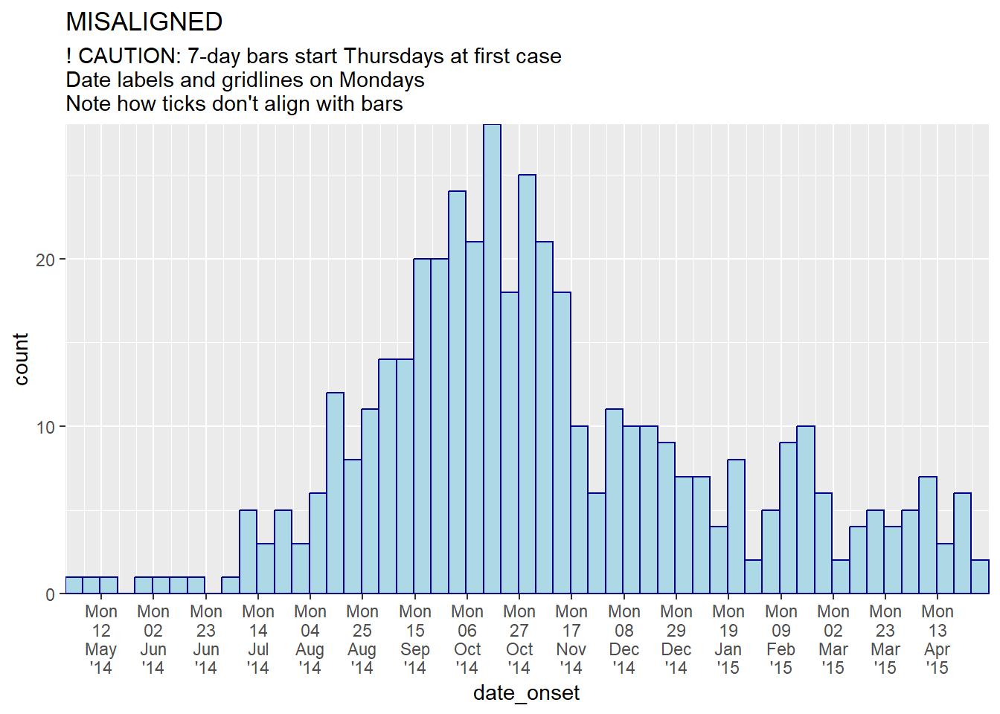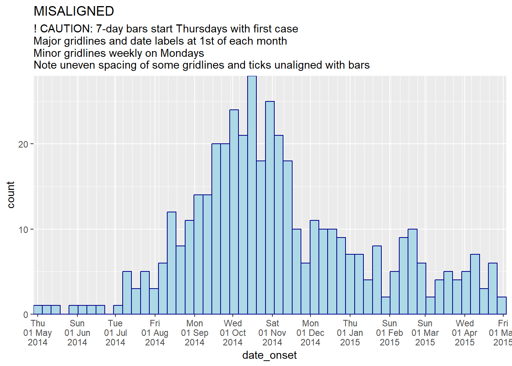
 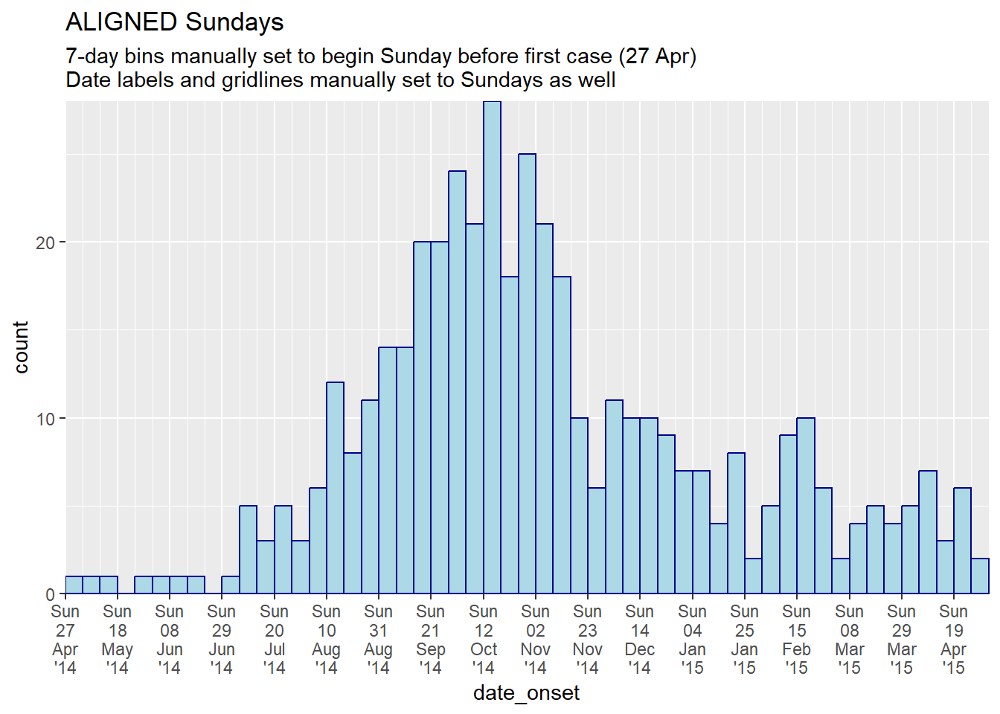
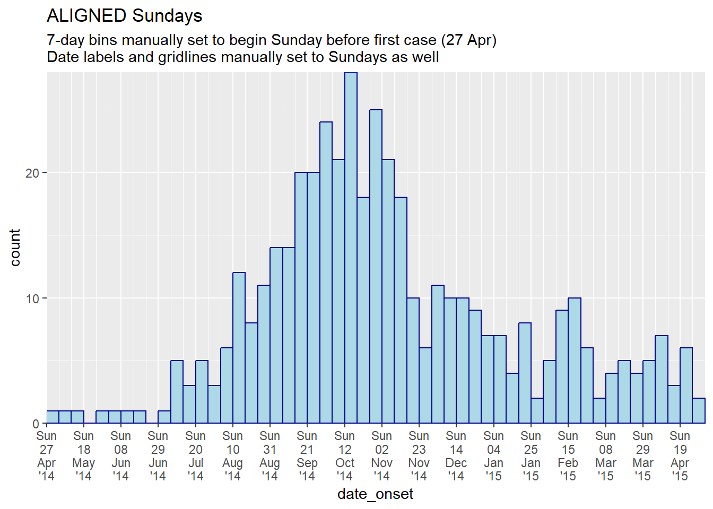
Toplu veri
Genellikle bir satır listesi yerine tesislerden, bölgelerden vb. toplu sayımlarla başlarsınız. ggplot() ile bir salgın eğrisi oluşturabilirsiniz ancak kod biraz farklı olacaktır. Bu bölüm, veri hazırlama bölümünde daha önce içe aktarılan count_data veri setini kullanacaktır. Bu veri seti, günlük hastane sayımlarına göre toplanan linelist’dir. İlk 50 satır aşağıda gösterilmiştir.
Komut Dosyası Çizimi günlük sayımlar
Bu günlük sayımlardan günlük bir salgın eğrisi çizebiliriz. İşte koddaki farklar:
- Estetik haritalama
aes()içinde, sayımlar sütunu olaraky =belirtin (bu durumda, sütun adın_cases’dir). -
stat = "identity"argümanınıgeom_histogram()içine ekleyin; bu, çubuk yüksekliğinin varsayılan olarak satır sayısı değil,y =değeri olması gerektiğini belirtir.
- Çubuklar arasında dikey beyaz çizgileri önlemek için
width =argümanını ekleyin. 1’e ayarlanmış günlük veriler için 7’ye ayarlanmış haftalık sayım verileri için Aylık sayım verileri için beyaz çizgiler bir sorundur (her ayın farklı gün sayısı vardır) - x ekseninizi kategorik sıralı bir faktöre (aylar) dönüştürmeyi vegeom_col()kullanmayı düşünün.
ggplot(data = count_data)+
geom_histogram(
mapping = aes(x = date_hospitalisation, y = n_cases),
stat = "identity",
width = 1)+ # for daily counts, set width = 1 to avoid white space between bars
labs(
x = "Date of report",
y = "Number of cases",
title = "Daily case incidence, from daily count data")
Haftalık sayıların çizilmesi
Verileriniz zaten haftaya göre vaka sayılarıysa, bu veri kümesine benzeyebilirler (count_data_weekly olarak adlandırılır):
count_data_weekly ’nin ilk 50 satırı aşağıda gösterilmiştir. Sayıların haftalar halinde toplandığını görebilirsiniz. Her hafta, haftanın ilk gününe göre görüntülenir (varsayılan olarak Pazartesi).
Şimdi x = salgın haftası sütunu olacak şekilde çizin. Estetik haritalamaya y = sayı sütununu eklemeyi ve yukarıda açıklandığı gibi stat = "identity" eklemeyi unutmayın.
ggplot(data = count_data_weekly)+
geom_histogram(
mapping = aes(
x = epiweek, # x-axis is epiweek (as class Date)
y = n_cases_weekly, # y-axis height in the weekly case counts
group = hospital, # we are grouping the bars and coloring by hospital
fill = hospital),
stat = "identity")+ # this is also required when plotting count data
# labels for x-axis
scale_x_date(
date_breaks = "2 months", # labels every 2 months
date_minor_breaks = "1 month", # gridlines every month
date_labels = '%b\n%Y')+ #labeled by month with year below
# Choose color palette (uses RColorBrewer package)
scale_fill_brewer(palette = "Pastel2")+
theme_minimal()+
labs(
x = "Week of onset",
y = "Weekly case incidence",
fill = "Hospital",
title = "Weekly case incidence, from aggregated count data by hospital")Hareketli ortalamalar
Ayrıntılı bir açıklama ve çeşitli seçenekler için Hareketli ortalamalar sayfasına bakın. Aşağıda, slider paketi ile hareketli ortalamaları hesaplamak için bir seçenek bulunmaktadır. Bu yaklaşımda, hareketli ortalama, çizimden önce veri setinde hesaplanır:
- Verileri gerektiği gibi sayımlar halinde toplayın (günlük, haftalık vb.) (bkz. [Verileri gruplandırma] sayfası).
-
slider paketinden
slide_index()ile oluşturulan hareketli ortalamayı tutmak için yeni bir sütun oluşturun.
- Hareketli ortalamayı, salgın eğrisi histogramının üstüne (sonra) bir
geom_line()olarak çizin.
Yararlı çevrimiçi slider paketi için belirtece bakın.
# load package
pacman::p_load(slider) # slider used to calculate rolling averages
# make dataset of daily counts and 7-day moving average
#######################################################
ll_counts_7day <- linelist %>% # begin with linelist
## count cases by date
count(date_onset, name = "new_cases") %>% # name new column with counts as "new_cases"
drop_na(date_onset) %>% # remove cases with missing date_onset
## calculate the average number of cases in 7-day window
mutate(
avg_7day = slider::slide_index( # create new column
new_cases, # calculate based on value in new_cases column
.i = date_onset, # index is date_onset col, so non-present dates are included in window
.f = ~mean(.x, na.rm = TRUE), # function is mean() with missing values removed
.before = 6, # window is the day and 6-days before
.complete = FALSE), # must be FALSE for unlist() to work in next step
avg_7day = unlist(avg_7day)) # convert class list to class numeric
# plot
######
ggplot(data = ll_counts_7day) + # begin with new dataset defined above
geom_histogram( # create epicurve histogram
mapping = aes(
x = date_onset, # date column as x-axis
y = new_cases), # height is number of daily new cases
stat = "identity", # height is y value
fill="#92a8d1", # cool color for bars
colour = "#92a8d1", # same color for bar border
)+
geom_line( # make line for rolling average
mapping = aes(
x = date_onset, # date column for x-axis
y = avg_7day, # y-value set to rolling average column
lty = "7-day \nrolling avg"), # name of line in legend
color="red", # color of line
size = 1) + # width of line
scale_x_date( # date scale
date_breaks = "1 month",
date_labels = '%d/%m',
expand = c(0,0)) +
scale_y_continuous( # y-axis scale
expand = c(0,0),
limits = c(0, NA)) +
labs(
x="",
y ="Number of confirmed cases",
fill = "Legend")+
theme_minimal()+
theme(legend.title = element_blank()) # removes title of legend
Fasetleme/küçük-katlar
Diğer ggplot’larda olduğu gibi, fasetli grafikler (“küçük katlar”) oluşturabilirsiniz. Bu el kitabının ggplot ipuçları sayfasında açıklandığı gibi, ya facet_wrap() ya da facet_grid()kullanabilirsiniz. Burada facet_wrap()ile gösteriyoruz. Salgın eğrileri için, facet_wrap()genellikle daha kolaydır, çünkü muhtemelen yalnızca bir sütunda fasetleme yapmanız gerekir.
Genel sözdizimi facet_wrap(rows ~ cols)şeklindedir; burada yaklaşık işaretinin (~) solunda fasetli grafiğin “satırları”na yayılacak bir sütunun adı ve yaklaşık işaretinin sağında, fasetli grafiğin “sütunlarına” yayılacak bir sütunun adı bulunur. En basitinden, yaklaşık işaretinin sağındaki bir sütun adı kullanın: facet_wrap(~age_cat).
Serbest eksenler
Her bir faset için eksenlerin ölçeklerinin aynı boyutlara “sabit” (varsayılan) veya “serbest” (yani, faset içindeki verilere göre değişecekleri) olup olmadığına karar vermeniz gerekecektir. Bunu, “free_x” veya “free_y” veya “free” belirterek facet_wrap() içindeki scales = argümanı ile yapın.
Fasetlerin sütun ve satır sayısı
Bu, facet_wrap()içinde ncol = ve nrow = ile belirtilebilir.
Panellerin sırası
Görünüm sırasını değiştirmek için, fasetleri oluşturmak için kullanılan faktör sütununun düzeylerinin temel sırasını değiştirin.
Estetik
Yazı tipi boyutu ve yüzü, şerit rengi vb., theme() aracılığıyla aşağıdaki gibi argümanlarla değiştirilebilir:
-
strip.text = element_text()(boyut, renk, yüz, açı…) -
strip.background = element_rect()(ör. element_rect(dolgu=“gri”))
-
strip.position =((“alt”, “üst”, “sol” veya “sağ” şeridin konumu)
Şerit etiketleri
Faset grafiklerinin etiketleri, bir faktör olarak sütunun “etiketleri” aracılığıyla veya bir “etiketleyici” kullanılarak değiştirilebilir.
ggplot2’deki as_labeller()işlevini kullanarak böyle bir etiketleyici yapın. Ardından, etiketleyiciyi, aşağıda gösterildiği gibi facet_wrap()öğesinin labeller = argümanına yerleştirin.
my_labels <- as_labeller(c(
"0-4" = "Ages 0-4",
"5-9" = "Ages 5-9",
"10-14" = "Ages 10-14",
"15-19" = "Ages 15-19",
"20-29" = "Ages 20-29",
"30-49" = "Ages 30-49",
"50-69" = "Ages 50-69",
"70+" = "Over age 70"))Örnek bir fasetli grafik - age_cat sütunu ile fasetli.
# make plot
###########
ggplot(central_data) +
geom_histogram(
mapping = aes(
x = date_onset,
group = age_cat,
fill = age_cat), # arguments inside aes() apply by group
color = "black", # arguments outside aes() apply to all data
# histogram breaks
breaks = weekly_breaks_central)+ # pre-defined date vector (see earlier in this page)
# The labels on the x-axis
scale_x_date(
expand = c(0,0), # remove excess x-axis space below and after case bars
date_breaks = "2 months", # labels appear every 2 months
date_minor_breaks = "1 month", # vertical lines appear every 1 month
date_labels = "%b\n'%y")+ # date labels format
# y-axis
scale_y_continuous(expand = c(0,0))+ # removes excess y-axis space between bottom of bars and the labels
# aesthetic themes
theme_minimal()+ # a set of themes to simplify plot
theme(
plot.caption = element_text(face = "italic", hjust = 0), # caption on left side in italics
axis.title = element_text(face = "bold"),
legend.position = "bottom",
strip.text = element_text(face = "bold", size = 10),
strip.background = element_rect(fill = "grey"))+ # axis titles in bold
# create facets
facet_wrap(
~age_cat,
ncol = 4,
strip.position = "top",
labeller = my_labels)+
# labels
labs(
title = "Weekly incidence of cases, by age category",
subtitle = "Subtitle",
fill = "Age category", # provide new title for legend
x = "Week of symptom onset",
y = "Weekly incident cases reported",
caption = stringr::str_glue("n = {nrow(central_data)} from Central Hospital; Case onsets range from {format(min(central_data$date_onset, na.rm=T), format = '%a %d %b %Y')} to {format(max(central_data$date_onset, na.rm=T), format = '%a %d %b %Y')}\n{nrow(central_data %>% filter(is.na(date_onset)))} cases missing date of onset and not shown"))Etiketleyiciler hakkında daha fazla bilgi için bu bağlantıya bakın.
Faset arka planında toplam salgın
Her fasetin arka planında toplam salgını göstermek için, ggplot’a boş parantezlerle gghighlight() işlevini ekleyin. Bu, gghighlight paketinden bir komuttur. Tüm yönlerdeki maksimum y ekseninin artık tüm salgının zirvesine dayandığını unutmayın. ggplot ipuçları sayfasında bu paketin daha fazla örneği mevcuttur.
ggplot(central_data) +
# epicurves by group
geom_histogram(
mapping = aes(
x = date_onset,
group = age_cat,
fill = age_cat), # arguments inside aes() apply by group
color = "black", # arguments outside aes() apply to all data
# histogram breaks
breaks = weekly_breaks_central)+ # pre-defined date vector (see top of ggplot section)
# add grey epidemic in background to each facet
gghighlight::gghighlight()+
# labels on x-axis
scale_x_date(
expand = c(0,0), # remove excess x-axis space below and after case bars
date_breaks = "2 months", # labels appear every 2 months
date_minor_breaks = "1 month", # vertical lines appear every 1 month
date_labels = "%b\n'%y")+ # date labels format
# y-axis
scale_y_continuous(expand = c(0,0))+ # removes excess y-axis space below 0
# aesthetic themes
theme_minimal()+ # a set of themes to simplify plot
theme(
plot.caption = element_text(face = "italic", hjust = 0), # caption on left side in italics
axis.title = element_text(face = "bold"),
legend.position = "bottom",
strip.text = element_text(face = "bold", size = 10),
strip.background = element_rect(fill = "white"))+ # axis titles in bold
# create facets
facet_wrap(
~age_cat, # each plot is one value of age_cat
ncol = 4, # number of columns
strip.position = "top", # position of the facet title/strip
labeller = my_labels)+ # labeller defines above
# labels
labs(
title = "Weekly incidence of cases, by age category",
subtitle = "Subtitle",
fill = "Age category", # provide new title for legend
x = "Week of symptom onset",
y = "Weekly incident cases reported",
caption = stringr::str_glue("n = {nrow(central_data)} from Central Hospital; Case onsets range from {format(min(central_data$date_onset, na.rm=T), format = '%a %d %b %Y')} to {format(max(central_data$date_onset, na.rm=T), format = '%a %d %b %Y')}\n{nrow(central_data %>% filter(is.na(date_onset)))} cases missing date of onset and not shown"))Veri içeren bir faset
Tüm verileri içeren bir model kutusuna sahip olmak istiyorsanız, tüm veri setini çoğaltın ve kopyaları tek bir model değeri olarak değerlendirin. Aşağıdaki bir “yardımcı” işlevi CreateAllFacet() bu konuda yardımcı olabilir (bu blog yazısı sayesinde). Çalıştırıldığında, satır sayısı iki katına çıkar ve yinelenen satırların “tümü” değerine sahip olacağı ve orijinal satırların faset sütununun orijinal değerine sahip olacağı, facet adlı yeni bir sütun olacaktır. Şimdi sadece facet sütununda faset yapmanız gerekiyor.
Kullanabilmeniz için çalıştırılması gereken yardımcı fonksiyon buradadır:
# Define helper function
CreateAllFacet <- function(df, col){
df$facet <- df[[col]]
temp <- df
temp$facet <- "all"
merged <-rbind(temp, df)
# ensure the facet value is a factor
merged[[col]] <- as.factor(merged[[col]])
return(merged)
}Şimdi yardımcı işlevi veri setine age_cat sütununda uygulayın:
# Create dataset that is duplicated and with new column "facet" to show "all" age categories as another facet level
central_data2 <- CreateAllFacet(central_data, col = "age_cat") %>%
# set factor levels
mutate(facet = fct_relevel(facet, "all", "0-4", "5-9",
"10-14", "15-19", "20-29",
"30-49", "50-69", "70+"))## Warning: 1 unknown level in `f`: 70+
# check levels
table(central_data2$facet, useNA = "always")##
## all 0-4 5-9 10-14 15-19 20-29 30-49 50-69 <NA>
## 454 84 84 82 58 73 57 7 9ggplot() komutundaki dikkate değer değişiklikler şunlardır:
- Kullanılan veriler artık central_data2’dir (yeni “facet” sütunu ile satırları ikiye katlayın).
- Etiketleyici kullanılıyorsa güncellenmesi gerekecek.
- ● İsteğe bağlı: dikey olarak yığılmış yüzeyler elde etmek için: model sütunu denklemin satır tarafına taşınır ve sağdaki “.” ile değiştirilir. (
facet_wrap(facet~.)) vencol = 1. Kaydedilmiş png çizim görüntüsünün genişliğini ve yüksekliğini de ayarlamanız gerekebilir ([ggplot ipuçlarında]ggsave()’e bakın).
ggplot(central_data2) +
# actual epicurves by group
geom_histogram(
mapping = aes(
x = date_onset,
group = age_cat,
fill = age_cat), # arguments inside aes() apply by group
color = "black", # arguments outside aes() apply to all data
# histogram breaks
breaks = weekly_breaks_central)+ # pre-defined date vector (see top of ggplot section)
# Labels on x-axis
scale_x_date(
expand = c(0,0), # remove excess x-axis space below and after case bars
date_breaks = "2 months", # labels appear every 2 months
date_minor_breaks = "1 month", # vertical lines appear every 1 month
date_labels = "%b\n'%y")+ # date labels format
# y-axis
scale_y_continuous(expand = c(0,0))+ # removes excess y-axis space between bottom of bars and the labels
# aesthetic themes
theme_minimal()+ # a set of themes to simplify plot
theme(
plot.caption = element_text(face = "italic", hjust = 0), # caption on left side in italics
axis.title = element_text(face = "bold"),
legend.position = "bottom")+
# create facets
facet_wrap(facet~. , # each plot is one value of facet
ncol = 1)+
# labels
labs(title = "Weekly incidence of cases, by age category",
subtitle = "Subtitle",
fill = "Age category", # provide new title for legend
x = "Week of symptom onset",
y = "Weekly incident cases reported",
caption = stringr::str_glue("n = {nrow(central_data)} from Central Hospital; Case onsets range from {format(min(central_data$date_onset, na.rm=T), format = '%a %d %b %Y')} to {format(max(central_data$date_onset, na.rm=T), format = '%a %d %b %Y')}\n{nrow(central_data %>% filter(is.na(date_onset)))} cases missing date of onset and not shown"))
32.4 Geçici veriler
Salgın eğrilerinde gösterilen en son veriler genellikle geçici olarak işaretlenmeli veya raporlama gecikmelerine tabi olmalıdır. Bu, belirli sayıda gün boyunca dikey bir çizgi ve/veya dikdörtgen eklenerek yapılabilir. İşte iki seçenek:
-
annotate()kullanın:- Bir satır için
annotate(geom = "segment")kullanın.x,xend,y, veyend’i temin edin. Boyutu, çizgi tipini (lty) ve rengi ayarlayın.
- Dikdörtgen için
annotate(geom = "rect")kullanın. xmin/xmax/ymin/ymax’ı temin edin. Rengi ve alfayı ayarlayın.
- Bir satır için
- Verileri geçici duruma göre gruplandırın ve bu çubukları farklı şekilde renklendirin.
DİKKAT: Bir dikdörtgen çizmek için geom_rect()’i deneyebilirsiniz, ancak şeffaflığı ayarlamak bir satır listesi bağlamında çalışmaz. Bu işlev, her gözlem/sıra için bir dikdörtgeni kaplar!. Çok düşük bir alfa (ör. 0.01) veya başka bir yaklaşım kullanın.
annotate() kullanma
-
annotate(geom = "rect")içinde,xminvexmaxargümanlarına Date sınıfının girdileri verilmelidir.
- Bu veriler haftalık çubuklar halinde toplandığından ve son çubuk, son veri noktasından sonraki Pazartesi gününe kadar uzandığından, gölgeli bölgenin 4 haftayı kapsıyor gibi görünebileceğini unutmayın.
- İşte bir
annotate()online örneği.
ggplot(central_data) +
# histogram
geom_histogram(
mapping = aes(x = date_onset),
breaks = weekly_breaks_central, # pre-defined date vector - see top of ggplot section
color = "darkblue",
fill = "lightblue") +
# scales
scale_y_continuous(expand = c(0,0))+
scale_x_date(
expand = c(0,0), # remove excess x-axis space below and after case bars
date_breaks = "1 month", # 1st of month
date_minor_breaks = "1 month", # 1st of month
date_labels = "%b\n'%y")+ # label format
# labels and theme
labs(
title = "Using annotate()\nRectangle and line showing that data from last 21-days are tentative",
x = "Week of symptom onset",
y = "Weekly case indicence")+
theme_minimal()+
# add semi-transparent red rectangle to tentative data
annotate(
"rect",
xmin = as.Date(max(central_data$date_onset, na.rm = T) - 21), # note must be wrapped in as.Date()
xmax = as.Date(Inf), # note must be wrapped in as.Date()
ymin = 0,
ymax = Inf,
alpha = 0.2, # alpha easy and intuitive to adjust using annotate()
fill = "red")+
# add black vertical line on top of other layers
annotate(
"segment",
x = max(central_data$date_onset, na.rm = T) - 21, # 21 days before last data
xend = max(central_data$date_onset, na.rm = T) - 21,
y = 0, # line begins at y = 0
yend = Inf, # line to top of plot
size = 2, # line size
color = "black",
lty = "solid")+ # linetype e.g. "solid", "dashed"
# add text in rectangle
annotate(
"text",
x = max(central_data$date_onset, na.rm = T) - 15,
y = 15,
label = "Subject to reporting delays",
angle = 90)Aynı siyah dikey çizgi aşağıdaki kodla da elde edilebilir, ancak geom_vline() fonksiyonunu kullanarak yüksekliği kontrol etme yeteneğinizi kaybedersiniz:
geom_vline(xintercept = max(central_data$date_onset, na.rm = T) - 21,
size = 2,
color = "black")Çubukların rengi
Alternatif bir yaklaşım, geçici veri çubuklarının rengini veya görüntüsünü ayarlamak olabilir. Veri hazırlama aşamasında yeni bir sütun oluşturabilir ve bunu, geçici verilerin aes(fill = )değeri diğer çubuklardan farklı bir renk veya alfa olacak şekilde verileri gruplamak için kullanabilirsiniz.
# add column
############
plot_data <- central_data %>%
mutate(tentative = case_when(
date_onset >= max(date_onset, na.rm=T) - 7 ~ "Tentative", # tenative if in last 7 days
TRUE ~ "Reliable")) # all else reliable
# plot
######
ggplot(plot_data, aes(x = date_onset, fill = tentative)) +
# histogram
geom_histogram(
breaks = weekly_breaks_central, # pre-defined data vector, see top of ggplot page
color = "black") +
# scales
scale_y_continuous(expand = c(0,0))+
scale_fill_manual(values = c("lightblue", "grey"))+
scale_x_date(
expand = c(0,0), # remove excess x-axis space below and after case bars
date_breaks = "3 weeks", # Monday every 3 weeks
date_minor_breaks = "week", # Monday weeks
date_labels = "%d\n%b\n'%y")+ # label format
# labels and theme
labs(title = "Show days that are tentative reporting",
subtitle = "")+
theme_minimal()+
theme(legend.title = element_blank()) # remove title of legend
32.5 Çok seviyeli tarih etiketleri
Alt etiket düzeylerini çoğaltmadan çok düzeyli tarih etiketleri (ör. ay ve yıl) istiyorsanız, aşağıdaki yaklaşımlardan birini göz önünde bulundurun:
Unutmayın - her bir etiketin parçalarını aşağıdaki yeni bir satıra koymak için date_labels veya labels argümanları içinde \n gibi araçları kullanabilirsiniz. Bununla birlikte, aşağıdaki kod, daha düşük bir satırda ve yalnızca bir kez yıllar veya aylar (örneğin) almanıza yardımcı olur. Aşağıdaki kodla ilgili birkaç not:
- Vaka sayıları estetik nedenlerle haftalar halinde toplanır. Ayrıntılar için salgın eğrisi sayfasına (toplanmış veri sekmesi) bakın..
- Aşağıdaki yüzey oluşturma yaklaşımı histogramlarla iyi çalışmadığından, histogram yerine
geom_area()çizgisi kullanılır.
Haftalık sayımlara toplayın
# Create dataset of case counts by week
#######################################
central_weekly <- linelist %>%
filter(hospital == "Central Hospital") %>% # filter linelist
mutate(week = lubridate::floor_date(date_onset, unit = "weeks")) %>%
count(week) %>% # summarize weekly case counts
drop_na(week) %>% # remove cases with missing onset_date
complete( # fill-in all weeks with no cases reported
week = seq.Date(
from = min(week),
to = max(week),
by = "week"),
fill = list(n = 0)) # convert new NA values to 0 countsGrafik yapın
# plot with box border on year
##############################
ggplot(central_weekly) +
geom_area(aes(x = week, y = n), # make line, specify x and y
stat = "identity") + # because line height is count number
scale_x_date(date_labels="%b", # date label format show month
date_breaks="month", # date labels on 1st of each month
expand=c(0,0)) + # remove excess space on each end
scale_y_continuous(
expand = c(0,0))+ # remove excess space below x-axis
facet_grid(~lubridate::year(week), # facet on year (of Date class column)
space="free_x",
scales="free_x", # x-axes adapt to data range (not "fixed")
switch="x") + # facet labels (year) on bottom
theme_bw() +
theme(strip.placement = "outside", # facet labels placement
strip.background = element_rect(fill = NA, # facet labels no fill grey border
colour = "grey50"),
panel.spacing = unit(0, "cm"))+ # no space between facet panels
labs(title = "Nested year labels, grey label border")
# plot with no box border on year
#################################
ggplot(central_weekly,
aes(x = week, y = n)) + # establish x and y for entire plot
geom_line(stat = "identity", # make line, line height is count number
color = "#69b3a2") + # line color
geom_point(size=1, color="#69b3a2") + # make points at the weekly data points
geom_area(fill = "#69b3a2", # fill area below line
alpha = 0.4)+ # fill transparency
scale_x_date(date_labels="%b", # date label format show month
date_breaks="month", # date labels on 1st of each month
expand=c(0,0)) + # remove excess space
scale_y_continuous(
expand = c(0,0))+ # remove excess space below x-axis
facet_grid(~lubridate::year(week), # facet on year (of Date class column)
space="free_x",
scales="free_x", # x-axes adapt to data range (not "fixed")
switch="x") + # facet labels (year) on bottom
theme_bw() +
theme(strip.placement = "outside", # facet label placement
strip.background = element_blank(), # no facet lable background
panel.grid.minor.x = element_blank(),
panel.border = element_rect(colour="grey40"), # grey border to facet PANEL
panel.spacing=unit(0,"cm"))+ # No space between facet panels
labs(title = "Nested year labels - points, shaded, no label border")Yukarıdaki teknikler bu ve stackoverflow.com’daki bu gönderiden uyarlanmıştır.
32.6 Çift eksen
Veri görselleştirme topluluğu içinde ikili eksenlerin geçerliliği hakkında şiddetli tartışmalar olmasına rağmen, birçok salgın süpervizör hala ikinci bir eksenle kaplanmış yüzde içeren bir salgın eğrisi veya benzer bir grafik görmek istiyor. Bu, ggplot ipuçları sayfasında daha kapsamlı bir şekilde tartışılmıştır, ancak cowplot yöntemini kullanan bir örnek aşağıda gösterilmiştir:
- İki farklı grafik yapılır ve daha sonra cowplot paketi ile birleştirilir.
- Grafikler tam olarak aynı x eksenine (belirlenen sınırlar) sahip olmalıdır, aksi takdirde veriler ve etiketler hizalanmayacaktır.
- Her biri
theme_cowplot()kullanır ve birinin y ekseni grafiğin sağ tarafına hareket ettirilir.
#load package
pacman::p_load(cowplot)
# Make first plot of epicurve histogram
#######################################
plot_cases <- linelist %>%
# plot cases per week
ggplot()+
# create histogram
geom_histogram(
mapping = aes(x = date_onset),
# bin breaks every week beginning monday before first case, going to monday after last case
breaks = weekly_breaks_all)+ # pre-defined vector of weekly dates (see top of ggplot section)
# specify beginning and end of date axis to align with other plot
scale_x_date(
limits = c(min(weekly_breaks_all), max(weekly_breaks_all)))+ # min/max of the pre-defined weekly breaks of histogram
# labels
labs(
y = "Daily cases",
x = "Date of symptom onset"
)+
theme_cowplot()
# make second plot of percent died per week
###########################################
plot_deaths <- linelist %>% # begin with linelist
group_by(week = floor_date(date_onset, "week")) %>% # create week column
# summarise to get weekly percent of cases who died
summarise(n_cases = n(),
died = sum(outcome == "Death", na.rm=T),
pct_died = 100*died/n_cases) %>%
# begin plot
ggplot()+
# line of weekly percent who died
geom_line( # create line of percent died
mapping = aes(x = week, y = pct_died), # specify y-height as pct_died column
stat = "identity", # set line height to the value in pct_death column, not the number of rows (which is default)
size = 2,
color = "black")+
# Same date-axis limits as the other plot - perfect alignment
scale_x_date(
limits = c(min(weekly_breaks_all), max(weekly_breaks_all)))+ # min/max of the pre-defined weekly breaks of histogram
# y-axis adjustments
scale_y_continuous( # adjust y-axis
breaks = seq(0,100, 10), # set break intervals of percent axis
limits = c(0, 100), # set extent of percent axis
position = "right")+ # move percent axis to the right
# Y-axis label, no x-axis label
labs(x = "",
y = "Percent deceased")+ # percent axis label
theme_cowplot() # add this to make the two plots merge together nicelyŞimdi iki grafiiği kaplamak için cowplot kullanın. x ekseni hizalamasına, y ekseninin yanına ve theme_cowplot()kullanımına dikkat edin.
aligned_plots <- cowplot::align_plots(plot_cases, plot_deaths, align="hv", axis="tblr")
ggdraw(aligned_plots[[1]]) + draw_plot(aligned_plots[[2]])
32.7 Kümülatif İnsidans
Not: incidence2 kullanıyorsanız, basit bir fonksiyonla kümülatif insidansı nasıl üretebileceğinize ilişkin bölüme bakın. Bu sayfa, kümülatif insidansın nasıl hesaplanacağını ve ggplot()ile nasıl çizileceğini ele alacaktır.
Bir vaka satır listesiyle başlıyorsanız, R tabanından cumsum() kullanarak bir salgındaki günlük kümülatif vaka sayısını içeren yeni bir sütun oluşturun:
cumulative_case_counts <- linelist %>%
count(date_onset) %>% # count of rows per day (returned in column "n")
mutate(
cumulative_cases = cumsum(n) # new column of the cumulative number of rows at each date
)İlk 10 satır aşağıda gösterilmiştir:
Bu kümülatif sütun daha sonra geom_line()kullanılarak date_onset’e göre çizilebilir:
plot_cumulative <- ggplot()+
geom_line(
data = cumulative_case_counts,
aes(x = date_onset, y = cumulative_cases),
size = 2,
color = "blue")
plot_cumulative
Ayrıca yukarıda ve ggplot ipuçları sayfasında açıklanan cowplot yöntemi kullanılarak çift eksenli salgın eğrisi üzerine bindirilebilir:
#load package
pacman::p_load(cowplot)
# Make first plot of epicurve histogram
plot_cases <- ggplot()+
geom_histogram(
data = linelist,
aes(x = date_onset),
binwidth = 1)+
labs(
y = "Daily cases",
x = "Date of symptom onset"
)+
theme_cowplot()
# make second plot of cumulative cases line
plot_cumulative <- ggplot()+
geom_line(
data = cumulative_case_counts,
aes(x = date_onset, y = cumulative_cases),
size = 2,
color = "blue")+
scale_y_continuous(
position = "right")+
labs(x = "",
y = "Cumulative cases")+
theme_cowplot()+
theme(
axis.line.x = element_blank(),
axis.text.x = element_blank(),
axis.title.x = element_blank(),
axis.ticks = element_blank())Şimdi iki grafiği kaplamak için cowplot kullanın. x ekseni hizalamasına, y ekseninin kenarına ve theme_cowplot()kullanımına dikkat edildi.
aligned_plots <- cowplot::align_plots(plot_cases, plot_cumulative, align="hv", axis="tblr")
ggdraw(aligned_plots[[1]]) + draw_plot(aligned_plots[[2]])